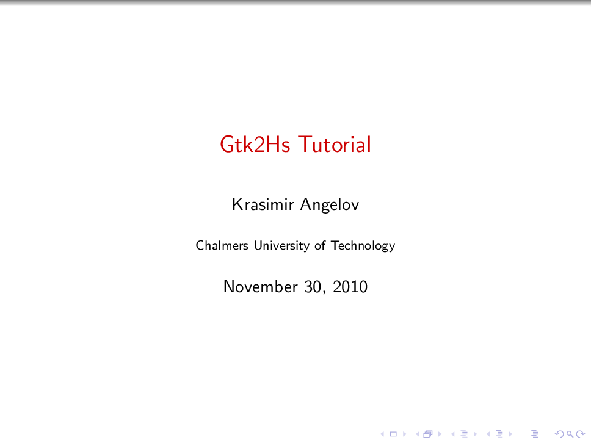
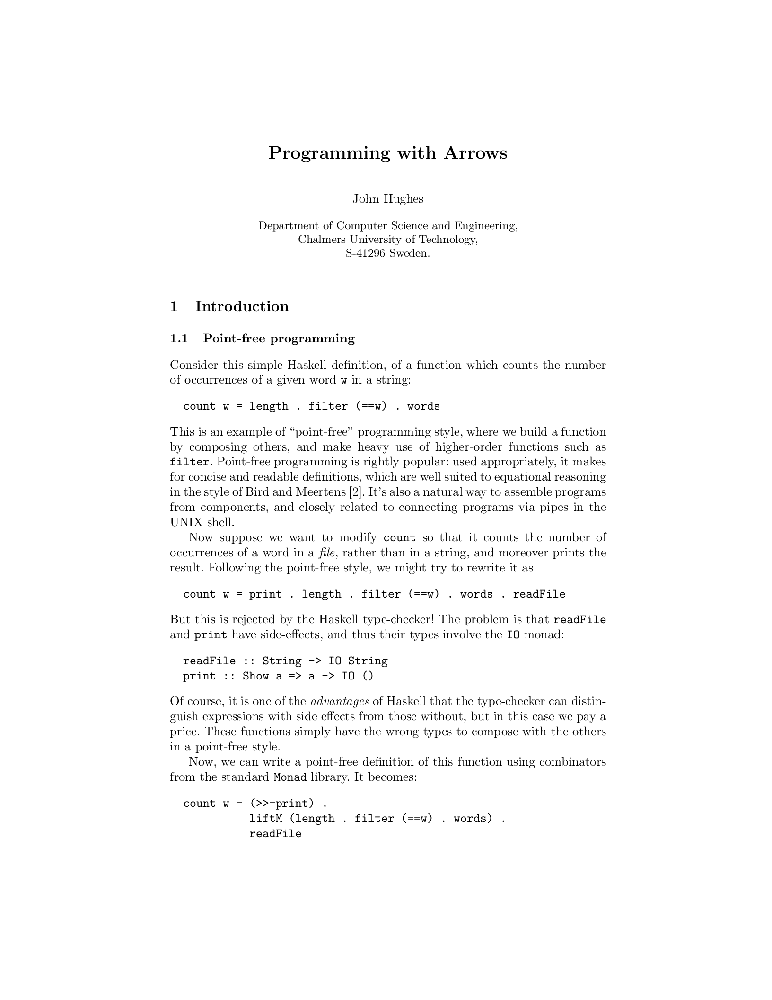
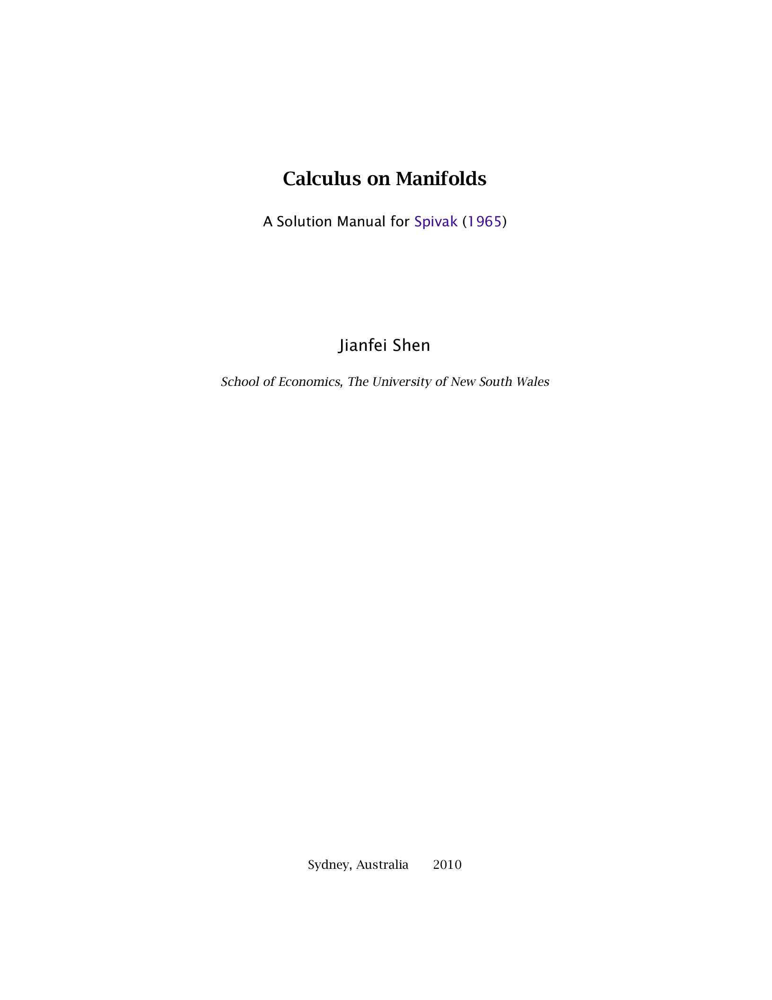
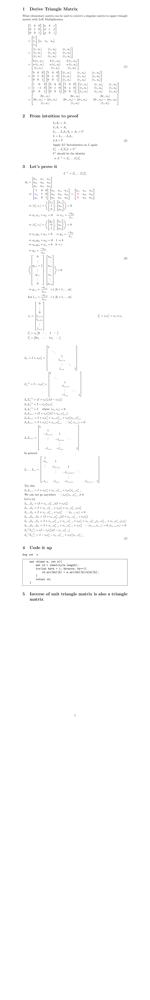
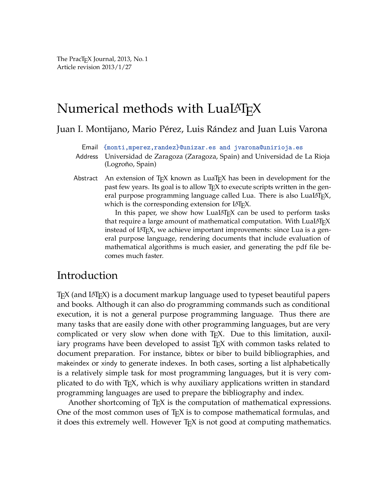

<table  style='table-layout:auto;width:100%;font-size:18px;background:#444A3F;' ><tr><td  id='notme' ><a href='pdf/06A-gtk2hs.pdf'><div style='display:grid;'><span style='color:red;'><br><span>06A gtk2hs</span></span></div><br><textarea rows=2 cols=10><br><span>06A gtk2hs</span></textarea> </a></td><td  id='notme' ><a href='pdf/14-10-27_Li_GarbageCollection.pdf'><div style='display:grid;'><span style='color:red;'><br><span>14 10 27 Li GarbageCollection</span></span></div><br><textarea rows=2 cols=10><br><span>14 10 27 Li GarbageCollection</span></textarea> </a></td><td  id='notme' ><a href='pdf/14-11-10_Zhou_ApplicativeFunctors.pdf'><div style='display:grid;'><span style='color:red;'><br><span>14 11 10 Zhou ApplicativeFunctors</span></span></div><br><textarea rows=2 cols=10><br><span>14 11 10 Zhou ApplicativeFunctors</span></textarea> </a></td><td  id='notme' ><a href='pdf/1709.01810.pdf'><div style='display:grid;'><span style='color:red;'><br><span>1709.01810</span></span></div><br><textarea rows=2 cols=10><br><span>1709.01810</span></textarea> </a></td><td  id='notme' ><a href='pdf/1803.10195.pdf'><div style='display:grid;'><span style='color:red;'><br><span>1803.10195</span></span></div><br><textarea rows=2 cols=10><br><span>1803.10195</span></textarea> </a></td><td  id='notme' ><a href='pdf/1810.13430.pdf'><div style='display:grid;'><span style='color:red;'><br><span>1810.13430</span></span></div><br><textarea rows=2 cols=10><br><span>1810.13430</span></textarea> </a></td></tr><tr><td  id='notme' ><a href='pdf/240h_notes_FUNCTIONAL_SYSTEMS_IN_HASKELL.pdf'><div style='display:grid;'><span style='color:red;'><br><span>240h notes FUNCTIONAL SYSTEMS IN HASKELL</span></span></div><br><textarea rows=2 cols=10><br><span>240h notes FUNCTIONAL SYSTEMS IN HASKELL</span></textarea> </a></td><td  id='notme' ><a href='pdf/34-gradient.pdf'><div style='display:grid;'><span style='color:red;'><br><span>34 gradient</span></span></div><br><textarea rows=2 cols=10><br><span>34 gradient</span></textarea> </a></td><td  id='notme' ><a href='pdf/3d_rotation_in_exponential_coordinates.pdf'><div style='display:grid;'><span style='color:red;'><br><span>3d rotation in exponential coordinates</span></span></div><br><textarea rows=2 cols=10><br><span>3d rotation in exponential coordinates</span></textarea> </a></td><td  id='notme' ><a href='pdf/3ptcubic.pdf'><div style='display:grid;'><span style='color:red;'><br><span>3ptcubic</span></span></div><br><textarea rows=2 cols=10><br><span>3ptcubic</span></textarea> </a></td><td  id='notme' ><a href='pdf/AG.pdf'><div style='display:grid;'><span style='color:red;'><br><span>AG</span></span></div><br><textarea rows=2 cols=10><br><span>AG</span></textarea> </a></td><td  id='notme' ><a href='pdf/AM221_lecture10.pdf'><div style='display:grid;'><span style='color:red;'><br><span>AM221 lecture10</span></span></div><br><textarea rows=2 cols=10><br><span>AM221 lecture10</span></textarea> </a></td></tr><tr><td  id='notme' ><a href='pdf/AM221_lecture9.pdf'><div style='display:grid;'><span style='color:red;'><br><span>AM221 lecture9</span></span></div><br><textarea rows=2 cols=10><br><span>AM221 lecture9</span></textarea> </a></td><td  id='notme' ><a href='pdf/APL2IDIOMS.pdf'><div style='display:grid;'><span style='color:red;'><br><span>APL2IDIOMS</span></span></div><br><textarea rows=2 cols=10><br><span>APL2IDIOMS</span></textarea> </a></td><td  id='notme' ><a href='pdf/APLNote.pdf'><div style='display:grid;'><span style='color:red;'><br><span>APLNote</span></span></div><br><textarea rows=2 cols=10><br><span>APLNote</span></textarea> </a></td><td  id='notme' ><a href='pdf/ASpecificationforDependentTypesinHaskell.pdf'><div style='display:grid;'><span style='color:red;'><br><span>ASpecificationforDependentTypesinHaskell</span></span></div><br><textarea rows=2 cols=10><br><span>ASpecificationforDependentTypesinHaskell</span></textarea> </a></td><td  id='notme' ><a href='pdf/A_comparison_of_C_concepts_and_Haskell_type_classe.pdf'><div style='display:grid;'><span style='color:red;'><br><span>A comparison of C concepts and Haskell type classe</span></span></div><br><textarea rows=2 cols=10><br><span>A comparison of C concepts and Haskell type classe</span></textarea> </a></td><td  id='notme' ><a href='pdf/Abikoff.pdf'><div style='display:grid;'><span style='color:red;'><br><span>Abikoff</span></span></div><br><textarea rows=2 cols=10><br><span>Abikoff</span></textarea> </a></td></tr><tr><td  id='notme' ><a href='pdf/Agda_Intro.pdf'><div style='display:grid;'><span style='color:red;'><br><span>Agda Intro</span></span></div><br><textarea rows=2 cols=10><br><span>Agda Intro</span></textarea> </a></td><td  id='notme' ><a href='pdf/An_Infinitely_Large_Napkin.pdf'><div style='display:grid;'><span style='color:red;'><br><span>An Infinitely Large Napkin</span></span></div><br><textarea rows=2 cols=10><br><span>An Infinitely Large Napkin</span></textarea> </a></td><td  id='notme' ><a href='pdf/Applicative.pdf'><div style='display:grid;'><span style='color:red;'><br><span>Applicative</span></span></div><br><textarea rows=2 cols=10><br><span>Applicative</span></textarea> </a></td><td  id='notme' ><a href='pdf/B-AP85-LucidDataflow.pdf'><div style='display:grid;'><span style='color:red;'><br><span>B AP85 LucidDataflow</span></span></div><br><textarea rows=2 cols=10><br><span>B AP85 LucidDataflow</span></textarea> </a></td><td  id='notme' ><a href='pdf/BHANDARI.pdf'><div style='display:grid;'><span style='color:red;'><br><span>BHANDARI</span></span></div><br><textarea rows=2 cols=10><br><span>BHANDARI</span></textarea> </a></td><td  id='notme' ><a href='pdf/B_Casselman_Mathematical_Illustrations_manual_of_geometry_and_PostScript_Cambridge.pdf'><div style='display:grid;'><span style='color:red;'><br><span>B Casselman Mathematical Illustrations manual of geometry and PostScript Cambridge</span></span></div><br><textarea rows=2 cols=10><br><span>B Casselman Mathematical Illustrations manual of geometry and PostScript Cambridge</span></textarea> </a></td></tr><tr><td  id='notme' ><a href='pdf/Beamer_Template_handout.pdf'><div style='display:grid;'><span style='color:red;'><br><span>Beamer Template handout</span></span></div><br><textarea rows=2 cols=10><br><span>Beamer Template handout</span></textarea> </a></td><td  id='notme' ><a href='pdf/Bilforms.pdf'><div style='display:grid;'><span style='color:red;'><br><span>Bilforms</span></span></div><br><textarea rows=2 cols=10><br><span>Bilforms</span></textarea> </a></td><td  id='notme' ><a href='pdf/BilinearForms_corrected.pdf'><div style='display:grid;'><span style='color:red;'><br><span>BilinearForms corrected</span></span></div><br><textarea rows=2 cols=10><br><span>BilinearForms corrected</span></textarea> </a></td><td  id='notme' ><a href='pdf/CIS_9_2_02.pdf'><div style='display:grid;'><span style='color:red;'><br><span>CIS 9 2 02</span></span></div><br><textarea rows=2 cols=10><br><span>CIS 9 2 02</span></textarea> </a></td><td  id='notme' ><a href='pdf/CS448B-20091021-GraphsAndTrees.pdf'><div style='display:grid;'><span style='color:red;'><br><span>CS448B 20091021 GraphsAndTrees</span></span></div><br><textarea rows=2 cols=10><br><span>CS448B 20091021 GraphsAndTrees</span></textarea> </a></td><td  id='notme' ><a href='pdf/Chebyshev_Polynomials.pdf'><div style='display:grid;'><span style='color:red;'><br><span>Chebyshev Polynomials</span></span></div><br><textarea rows=2 cols=10><br><span>Chebyshev Polynomials</span></textarea> </a></td></tr><tr><td  id='notme' ><a href='pdf/ComputationalGeometryAlgorithmsandApplications3rdEd.pdf'><div style='display:grid;'><span style='color:red;'><br><span>ComputationalGeometryAlgorithmsandApplications3rdEd</span></span></div><br><textarea rows=2 cols=10><br><span>ComputationalGeometryAlgorithmsandApplications3rdEd</span></textarea> </a></td><td  id='notme' ><a href='pdf/ComputationalGeometryinC.pdf'><div style='display:grid;'><span style='color:red;'><br><span>ComputationalGeometryinC</span></span></div><br><textarea rows=2 cols=10><br><span>ComputationalGeometryinC</span></textarea> </a></td><td  id='notme' ><a href='pdf/Computational_Conformal_Geometry_Applied_in_Engine.pdf'><div style='display:grid;'><span style='color:red;'><br><span>Computational Conformal Geometry Applied in Engine</span></span></div><br><textarea rows=2 cols=10><br><span>Computational Conformal Geometry Applied in Engine</span></textarea> </a></td><td  id='notme' ><a href='pdf/CppLambda_GoodNote.pdf'><div style='display:grid;'><span style='color:red;'><br><span>CppLambda GoodNote</span></span></div><br><textarea rows=2 cols=10><br><span>CppLambda GoodNote</span></textarea> </a></td><td  id='notme' ><a href='pdf/Crane_OverviewConformalGeometryProcessing_SGP.pdf'><div style='display:grid;'><span style='color:red;'><br><span>Crane OverviewConformalGeometryProcessing SGP</span></span></div><br><textarea rows=2 cols=10><br><span>Crane OverviewConformalGeometryProcessing SGP</span></textarea> </a></td><td  id='notme' ><a href='pdf/Crossproduct.pdf'><div style='display:grid;'><span style='color:red;'><br><span>Crossproduct</span></span></div><br><textarea rows=2 cols=10><br><span>Crossproduct</span></textarea> </a></td></tr><tr><td  id='notme' ><a href='pdf/DemirLeung_GRO.pdf'><div style='display:grid;'><span style='color:red;'><br><span>DemirLeung GRO</span></span></div><br><textarea rows=2 cols=10><br><span>DemirLeung GRO</span></textarea> </a></td><td  id='notme' ><a href='pdf/Dissertation_Rieck_2017.pdf'><div style='display:grid;'><span style='color:red;'><br><span>Dissertation Rieck 2017</span></span></div><br><textarea rows=2 cols=10><br><span>Dissertation Rieck 2017</span></textarea> </a></td><td  id='notme' ><a href='pdf/DyalogProgrammingReferenceGuide.pdf'><div style='display:grid;'><span style='color:red;'><br><span>DyalogProgrammingReferenceGuide</span></span></div><br><textarea rows=2 cols=10><br><span>DyalogProgrammingReferenceGuide</span></textarea> </a></td><td  id='notme' ><a href='pdf/ElispCheatSheet.pdf'><div style='display:grid;'><span style='color:red;'><br><span>ElispCheatSheet</span></span></div><br><textarea rows=2 cols=10><br><span>ElispCheatSheet</span></textarea> </a></td><td  id='notme' ><a href='pdf/Ellipse-and-EllipticCurves.pdf'><div style='display:grid;'><span style='color:red;'><br><span>Ellipse and EllipticCurves</span></span></div><br><textarea rows=2 cols=10><br><span>Ellipse and EllipticCurves</span></textarea> </a></td><td  id='notme' ><a href='pdf/EuroVis2018_4D.pdf'><div style='display:grid;'><span style='color:red;'><br><span>EuroVis2018 4D</span></span></div><br><textarea rows=2 cols=10><br><span>EuroVis2018 4D</span></textarea> </a></td></tr><tr><td  id='notme' ><a href='pdf/FingerTree.pdf'><div style='display:grid;'><span style='color:red;'><br><span>FingerTree</span></span></div><br><textarea rows=2 cols=10><br><span>FingerTree</span></textarea> </a></td><td  id='notme' ><a href='pdf/FirstFundamentalForm.pdf'><div style='display:grid;'><span style='color:red;'><br><span>FirstFundamentalForm</span></span></div><br><textarea rows=2 cols=10><br><span>FirstFundamentalForm</span></textarea> </a></td><td  id='notme' ><a href='pdf/Fortune87-SweepLine-Voronoi.pdf'><div style='display:grid;'><span style='color:red;'><br><span>Fortune87 SweepLine Voronoi</span></span></div><br><textarea rows=2 cols=10><br><span>Fortune87 SweepLine Voronoi</span></textarea> </a></td><td  id='notme' ><a href='pdf/FunctionalReporting.pdf'><div style='display:grid;'><span style='color:red;'><br><span>FunctionalReporting</span></span></div><br><textarea rows=2 cols=10><br><span>FunctionalReporting</span></textarea> </a></td><td  id='notme' ><a href='pdf/Functional_Reporting.pdf'><div style='display:grid;'><span style='color:red;'><br><span>Functional Reporting</span></span></div><br><textarea rows=2 cols=10><br><span>Functional Reporting</span></textarea> </a></td><td  id='notme' ><a href='pdf/GeoC-Voronoi-algorithms.pdf'><div style='display:grid;'><span style='color:red;'><br><span>GeoC Voronoi algorithms</span></span></div><br><textarea rows=2 cols=10><br><span>GeoC Voronoi algorithms</span></textarea> </a></td></tr><tr><td  id='notme' ><a href='pdf/GimbalLockPresentationJan2016.pdf'><div style='display:grid;'><span style='color:red;'><br><span>GimbalLockPresentationJan2016</span></span></div><br><textarea rows=2 cols=10><br><span>GimbalLockPresentationJan2016</span></textarea> </a></td><td  id='notme' ><a href='pdf/Gu-theory.pdf'><div style='display:grid;'><span style='color:red;'><br><span>Gu theory</span></span></div><br><textarea rows=2 cols=10><br><span>Gu theory</span></textarea> </a></td><td  id='notme' ><a href='pdf/Guide2.pdf'><div style='display:grid;'><span style='color:red;'><br><span>Guide2</span></span></div><br><textarea rows=2 cols=10><br><span>Guide2</span></textarea> </a></td><td  id='notme' ><a href='pdf/Haskell-User-Survey-Results.pdf'><div style='display:grid;'><span style='color:red;'><br><span>Haskell User Survey Results</span></span></div><br><textarea rows=2 cols=10><br><span>Haskell User Survey Results</span></textarea> </a></td><td  id='notme' ><a href='pdf/HaskellArticles-1.pdf'><div style='display:grid;'><span style='color:red;'><br><span>HaskellArticles 1</span></span></div><br><textarea rows=2 cols=10><br><span>HaskellArticles 1</span></textarea> </a></td><td  id='notme' ><a href='pdf/HaskellCheatSheet.pdf'><div style='display:grid;'><span style='color:red;'><br><span>HaskellCheatSheet</span></span></div><br><textarea rows=2 cols=10><br><span>HaskellCheatSheet</span></textarea> </a></td></tr><tr><td  id='notme' ><a href='pdf/HaskellNotesForProfessionals.pdf'><div style='display:grid;'><span style='color:red;'><br><span>HaskellNotesForProfessionals</span></span></div><br><textarea rows=2 cols=10><br><span>HaskellNotesForProfessionals</span></textarea> </a></td><td  id='notme' ><a href='pdf/Haskell_users_guide.pdf'><div style='display:grid;'><span style='color:red;'><br><span>Haskell users guide</span></span></div><br><textarea rows=2 cols=10><br><span>Haskell users guide</span></textarea> </a></td><td  id='notme' ><a href='pdf/Hopf-fibration_Treisman.pdf'><div style='display:grid;'><span style='color:red;'><br><span>Hopf fibration Treisman</span></span></div><br><textarea rows=2 cols=10><br><span>Hopf fibration Treisman</span></textarea> </a></td><td  id='notme' ><a href='pdf/Hopf-lecture_notes.pdf'><div style='display:grid;'><span style='color:red;'><br><span>Hopf lecture notes</span></span></div><br><textarea rows=2 cols=10><br><span>Hopf lecture notes</span></textarea> </a></td><td  id='notme' ><a href='pdf/Implicit_Curves_and_Surfaces_Mathematics_DataStructures_and_Algorithms_Gomes.pdf'><div style='display:grid;'><span style='color:red;'><br><span>Implicit Curves and Surfaces Mathematics DataStructures and Algorithms Gomes</span></span></div><br><textarea rows=2 cols=10><br><span>Implicit Curves and Surfaces Mathematics DataStructures and Algorithms Gomes</span></textarea> </a></td><td  id='notme' ><a href='pdf/Introduction_to_differential_geometry.pdf'><div style='display:grid;'><span style='color:red;'><br><span>Introduction to differential geometry</span></span></div><br><textarea rows=2 cols=10><br><span>Introduction to differential geometry</span></textarea> </a></td></tr><tr><td  id='notme' ><a href='pdf/J602_RefCard_color_letter_current.pdf'><div style='display:grid;'><span style='color:red;'><br><span>J602 RefCard color letter current</span></span></div><br><textarea rows=2 cols=10><br><span>J602 RefCard color letter current</span></textarea> </a></td><td  id='notme' ><a href='pdf/Jacobian2011-2011.pdf'><div style='display:grid;'><span style='color:red;'><br><span>Jacobian2011 2011</span></span></div><br><textarea rows=2 cols=10><br><span>Jacobian2011 2011</span></textarea> </a></td><td  id='notme' ><a href='pdf/Jacobian_matrix.pdf'><div style='display:grid;'><span style='color:red;'><br><span>Jacobian matrix</span></span></div><br><textarea rows=2 cols=10><br><span>Jacobian matrix</span></textarea> </a></td><td  id='notme' ><a href='pdf/JavaGenerics.pdf'><div style='display:grid;'><span style='color:red;'><br><span>JavaGenerics</span></span></div><br><textarea rows=2 cols=10><br><span>JavaGenerics</span></textarea> </a></td><td  id='notme' ><a href='pdf/JavaVisitorPattern.pdf'><div style='display:grid;'><span style='color:red;'><br><span>JavaVisitorPattern</span></span></div><br><textarea rows=2 cols=10><br><span>JavaVisitorPattern</span></textarea> </a></td><td  id='notme' ><a href='pdf/JforC20071003.pdf'><div style='display:grid;'><span style='color:red;'><br><span>JforC20071003</span></span></div><br><textarea rows=2 cols=10><br><span>JforC20071003</span></textarea> </a></td></tr><tr><td  id='notme' ><a href='pdf/LaTeX_symbols.pdf'><div style='display:grid;'><span style='color:red;'><br><span>LaTeX symbols</span></span></div><br><textarea rows=2 cols=10><br><span>LaTeX symbols</span></textarea> </a></td><td  id='notme' ><a href='pdf/LightWeight_extension_record.pdf'><div style='display:grid;'><span style='color:red;'><br><span>LightWeight extension record</span></span></div><br><textarea rows=2 cols=10><br><span>LightWeight extension record</span></textarea> </a></td><td  id='notme' ><a href='pdf/LongestIncreasingSubsequence.pdf'><div style='display:grid;'><span style='color:red;'><br><span>LongestIncreasingSubsequence</span></span></div><br><textarea rows=2 cols=10><br><span>LongestIncreasingSubsequence</span></textarea> </a></td><td  id='notme' ><a href='pdf/LuaTeX(1).pdf'><div style='display:grid;'><span style='color:red;'><br><span>LuaTeX(1)</span></span></div><br><textarea rows=2 cols=10><br><span>LuaTeX(1)</span></textarea> </a></td><td  id='notme' ><a href='pdf/Lyons_Elem-intro-Hopf-fibration.pdf'><div style='display:grid;'><span style='color:red;'><br><span>Lyons Elem intro Hopf fibration</span></span></div><br><textarea rows=2 cols=10><br><span>Lyons Elem intro Hopf fibration</span></textarea> </a></td><td  id='notme' ><a href='pdf/MAT4144_5158_Introduction_to_Lie_Groups.pdf'><div style='display:grid;'><span style='color:red;'><br><span>MAT4144 5158 Introduction to Lie Groups</span></span></div><br><textarea rows=2 cols=10><br><span>MAT4144 5158 Introduction to Lie Groups</span></textarea> </a></td></tr><tr><td  id='notme' ><a href='pdf/MasteringDyalogAPL.pdf'><div style='display:grid;'><span style='color:red;'><br><span>MasteringDyalogAPL</span></span></div><br><textarea rows=2 cols=10><br><span>MasteringDyalogAPL</span></textarea> </a></td><td  id='notme' ><a href='pdf/Math501X_GaussBonnet.pdf'><div style='display:grid;'><span style='color:red;'><br><span>Math501X GaussBonnet</span></span></div><br><textarea rows=2 cols=10><br><span>Math501X GaussBonnet</span></textarea> </a></td><td  id='notme' ><a href='pdf/MeshDataStructures.pdf'><div style='display:grid;'><span style='color:red;'><br><span>MeshDataStructures</span></span></div><br><textarea rows=2 cols=10><br><span>MeshDataStructures</span></textarea> </a></td><td  id='notme' ><a href='pdf/MethodofSteepestDescent.pdf'><div style='display:grid;'><span style='color:red;'><br><span>MethodofSteepestDescent</span></span></div><br><textarea rows=2 cols=10><br><span>MethodofSteepestDescent</span></textarea> </a></td><td  id='notme' ><a href='pdf/MinimumEditDistance.pdf'><div style='display:grid;'><span style='color:red;'><br><span>MinimumEditDistance</span></span></div><br><textarea rows=2 cols=10><br><span>MinimumEditDistance</span></textarea> </a></td><td  id='notme' ><a href='pdf/MonadReader_good.pdf'><div style='display:grid;'><span style='color:red;'><br><span>MonadReader good</span></span></div><br><textarea rows=2 cols=10><br><span>MonadReader good</span></textarea> </a></td></tr><tr><td  id='notme' ><a href='pdf/Monadic_Parsing_in_haskell_pearl.pdf'><div style='display:grid;'><span style='color:red;'><br><span>Monadic Parsing in haskell pearl</span></span></div><br><textarea rows=2 cols=10><br><span>Monadic Parsing in haskell pearl</span></textarea> </a></td><td  id='notme' ><a href='pdf/NumericalRecipesinC.pdf'><div style='display:grid;'><span style='color:red;'><br><span>NumericalRecipesinC</span></span></div><br><textarea rows=2 cols=10><br><span>NumericalRecipesinC</span></textarea> </a></td><td  id='notme' ><a href='pdf/OerstedMedalLecture.pdf'><div style='display:grid;'><span style='color:red;'><br><span>OerstedMedalLecture</span></span></div><br><textarea rows=2 cols=10><br><span>OerstedMedalLecture</span></textarea> </a></td><td  id='notme' ><a href='pdf/OpenPatternMatching.pdf'><div style='display:grid;'><span style='color:red;'><br><span>OpenPatternMatching</span></span></div><br><textarea rows=2 cols=10><br><span>OpenPatternMatching</span></textarea> </a></td><td  id='notme' ><a href='pdf/Opengl_GLSL_Good_Book.pdf'><div style='display:grid;'><span style='color:red;'><br><span>Opengl GLSL Good Book</span></span></div><br><textarea rows=2 cols=10><br><span>Opengl GLSL Good Book</span></textarea> </a></td><td  id='notme' ><a href='pdf/PacificVis2018_Fullerene_Fragmentation.pdf'><div style='display:grid;'><span style='color:red;'><br><span>PacificVis2018 Fullerene Fragmentation</span></span></div><br><textarea rows=2 cols=10><br><span>PacificVis2018 Fullerene Fragmentation</span></textarea> </a></td></tr><tr><td  id='notme' ><a href='pdf/PatternClassification.pdf'><div style='display:grid;'><span style='color:red;'><br><span>PatternClassification</span></span></div><br><textarea rows=2 cols=10><br><span>PatternClassification</span></textarea> </a></td><td  id='notme' ><a href='pdf/PrefixSumBlelloch.pdf'><div style='display:grid;'><span style='color:red;'><br><span>PrefixSumBlelloch</span></span></div><br><textarea rows=2 cols=10><br><span>PrefixSumBlelloch</span></textarea> </a></td><td  id='notme' ><a href='pdf/ProjectiveGeometry.pdf'><div style='display:grid;'><span style='color:red;'><br><span>ProjectiveGeometry</span></span></div><br><textarea rows=2 cols=10><br><span>ProjectiveGeometry</span></textarea> </a></td><td  id='notme' ><a href='pdf/QR_modifed_gram_smitd_algo.pdf'><div style='display:grid;'><span style='color:red;'><br><span>QR modifed gram smitd algo</span></span></div><br><textarea rows=2 cols=10><br><span>QR modifed gram smitd algo</span></textarea> </a></td><td  id='notme' ><a href='pdf/RIDE_User_Guide.pdf'><div style='display:grid;'><span style='color:red;'><br><span>RIDE User Guide</span></span></div><br><textarea rows=2 cols=10><br><span>RIDE User Guide</span></textarea> </a></td><td  id='notme' ><a href='pdf/Real-Time-Fluid-Dynamics.pdf'><div style='display:grid;'><span style='color:red;'><br><span>Real Time Fluid Dynamics</span></span></div><br><textarea rows=2 cols=10><br><span>Real Time Fluid Dynamics</span></textarea> </a></td></tr><tr><td  id='notme' ><a href='pdf/SLIM2017.pdf'><div style='display:grid;'><span style='color:red;'><br><span>SLIM2017</span></span></div><br><textarea rows=2 cols=10><br><span>SLIM2017</span></textarea> </a></td><td  id='notme' ><a href='pdf/Section_3.9--Polynomial_Rings.pdf'><div style='display:grid;'><span style='color:red;'><br><span>Section 3.9  Polynomial Rings</span></span></div><br><textarea rows=2 cols=10><br><span>Section 3.9  Polynomial Rings</span></textarea> </a></td><td  id='notme' ><a href='pdf/Shape-polymorphic.pdf'><div style='display:grid;'><span style='color:red;'><br><span>Shape polymorphic</span></span></div><br><textarea rows=2 cols=10><br><span>Shape polymorphic</span></textarea> </a></td><td  id='notme' ><a href='pdf/SkewMatrix_CrossProduct.pdf'><div style='display:grid;'><span style='color:red;'><br><span>SkewMatrix CrossProduct</span></span></div><br><textarea rows=2 cols=10><br><span>SkewMatrix CrossProduct</span></textarea> </a></td><td  id='notme' ><a href='pdf/Spivac_text1.pdf'><div style='display:grid;'><span style='color:red;'><br><span>Spivac text1</span></span></div><br><textarea rows=2 cols=10><br><span>Spivac text1</span></textarea> </a></td><td  id='notme' ><a href='pdf/StateMachine1.pdf'><div style='display:grid;'><span style='color:red;'><br><span>StateMachine1</span></span></div><br><textarea rows=2 cols=10><br><span>StateMachine1</span></textarea> </a></td></tr><tr><td  id='notme' ><a href='pdf/StreamFusion.pdf'><div style='display:grid;'><span style='color:red;'><br><span>StreamFusion</span></span></div><br><textarea rows=2 cols=10><br><span>StreamFusion</span></textarea> </a></td><td  id='notme' ><a href='pdf/The_C_Programming_Language.pdf'><div style='display:grid;'><span style='color:red;'><br><span>The C Programming Language</span></span></div><br><textarea rows=2 cols=10><br><span>The C Programming Language</span></textarea> </a></td><td  id='notme' ><a href='pdf/Timo_Maarse___s4416295___Parsing_with_derivatives_in_Haskell.pdf'><div style='display:grid;'><span style='color:red;'><br><span>Timo Maarse   s4416295   Parsing with derivatives in Haskell</span></span></div><br><textarea rows=2 cols=10><br><span>Timo Maarse   s4416295   Parsing with derivatives in Haskell</span></textarea> </a></td><td  id='notme' ><a href='pdf/TopoInVis2017_Skeletons.pdf'><div style='display:grid;'><span style='color:red;'><br><span>TopoInVis2017 Skeletons</span></span></div><br><textarea rows=2 cols=10><br><span>TopoInVis2017 Skeletons</span></textarea> </a></td><td  id='notme' ><a href='pdf/Try44.pdf'><div style='display:grid;'><span style='color:red;'><br><span>Try44</span></span></div><br><textarea rows=2 cols=10><br><span>Try44</span></textarea> </a></td><td  id='notme' ><a href='pdf/Tweedale-TamingCMonster.pdf'><div style='display:grid;'><span style='color:red;'><br><span>Tweedale TamingCMonster</span></span></div><br><textarea rows=2 cols=10><br><span>Tweedale TamingCMonster</span></textarea> </a></td></tr><tr><td  id='notme' ><a href='pdf/UA-Valeriote.pdf'><div style='display:grid;'><span style='color:red;'><br><span>UA Valeriote</span></span></div><br><textarea rows=2 cols=10><br><span>UA Valeriote</span></textarea> </a></td><td  id='notme' ><a href='pdf/Uniformization-2016-Henri-Paul-de-Saint-Gervais.pdf'><div style='display:grid;'><span style='color:red;'><br><span>Uniformization 2016 Henri Paul de Saint Gervais</span></span></div><br><textarea rows=2 cols=10><br><span>Uniformization 2016 Henri Paul de Saint Gervais</span></textarea> </a></td><td  id='notme' ><a href='pdf/Verified_Programming_in_Agda.pdf'><div style='display:grid;'><span style='color:red;'><br><span>Verified Programming in Agda</span></span></div><br><textarea rows=2 cols=10><br><span>Verified Programming in Agda</span></textarea> </a></td><td  id='notme' ><a href='pdf/Vis2017_Networks.pdf'><div style='display:grid;'><span style='color:red;'><br><span>Vis2017 Networks</span></span></div><br><textarea rows=2 cols=10><br><span>Vis2017 Networks</span></textarea> </a></td><td  id='notme' ><a href='pdf/ad-hoc-polymorphism.pdf'><div style='display:grid;'><span style='color:red;'><br><span>ad hoc polymorphism</span></span></div><br><textarea rows=2 cols=10><br><span>ad hoc polymorphism</span></textarea> </a></td><td  id='notme' ><a href='pdf/affine.pdf'><div style='display:grid;'><span style='color:red;'><br><span>affine</span></span></div><br><textarea rows=2 cols=10><br><span>affine</span></textarea> </a></td></tr><tr><td  id='notme' ><a href='pdf/affine_aron.pdf'><div style='display:grid;'><span style='color:red;'><br><span>affine aron</span></span></div><br><textarea rows=2 cols=10><br><span>affine aron</span></textarea> </a></td><td  id='notme' ><a href='pdf/agda.pdf'><div style='display:grid;'><span style='color:red;'><br><span>agda</span></span></div><br><textarea rows=2 cols=10><br><span>agda</span></textarea> </a></td><td  id='notme' ><a href='pdf/agda_good_tutorial.pdf'><div style='display:grid;'><span style='color:red;'><br><span>agda good tutorial</span></span></div><br><textarea rows=2 cols=10><br><span>agda good tutorial</span></textarea> </a></td><td  id='notme' ><a href='pdf/agda_simple_tutorial.pdf'><div style='display:grid;'><span style='color:red;'><br><span>agda simple tutorial</span></span></div><br><textarea rows=2 cols=10><br><span>agda simple tutorial</span></textarea> </a></td><td  id='notme' ><a href='pdf/agda_tutoria3.pdf'><div style='display:grid;'><span style='color:red;'><br><span>agda tutoria3</span></span></div><br><textarea rows=2 cols=10><br><span>agda tutoria3</span></textarea> </a></td><td  id='notme' ><a href='pdf/agda_tutoria5.pdf'><div style='display:grid;'><span style='color:red;'><br><span>agda tutoria5</span></span></div><br><textarea rows=2 cols=10><br><span>agda tutoria5</span></textarea> </a></td></tr><tr><td  id='notme' ><a href='pdf/agda_tutorial.pdf'><div style='display:grid;'><span style='color:red;'><br><span>agda tutorial</span></span></div><br><textarea rows=2 cols=10><br><span>agda tutorial</span></textarea> </a></td><td  id='notme' ><a href='pdf/agda_tutorial5.pdf'><div style='display:grid;'><span style='color:red;'><br><span>agda tutorial5</span></span></div><br><textarea rows=2 cols=10><br><span>agda tutorial5</span></textarea> </a></td><td  id='notme' ><a href='pdf/agda_tutorial_good2.pdf'><div style='display:grid;'><span style='color:red;'><br><span>agda tutorial good2</span></span></div><br><textarea rows=2 cols=10><br><span>agda tutorial good2</span></textarea> </a></td><td  id='notme' ><a href='pdf/agda_user_manual.pdf'><div style='display:grid;'><span style='color:red;'><br><span>agda user manual</span></span></div><br><textarea rows=2 cols=10><br><span>agda user manual</span></textarea> </a></td><td  id='notme' ><a href='pdf/algebra13_rotation_group.pdf'><div style='display:grid;'><span style='color:red;'><br><span>algebra13 rotation group</span></span></div><br><textarea rows=2 cols=10><br><span>algebra13 rotation group</span></textarea> </a></td><td  id='notme' ><a href='pdf/algebraSystemHaskell.pdf'><div style='display:grid;'><span style='color:red;'><br><span>algebraSystemHaskell</span></span></div><br><textarea rows=2 cols=10><br><span>algebraSystemHaskell</span></textarea> </a></td></tr><tr><td  id='notme' ><a href='pdf/algebra_geometry_conformal_mapping.pdf'><div style='display:grid;'><span style='color:red;'><br><span>algebra geometry conformal mapping</span></span></div><br><textarea rows=2 cols=10><br><span>algebra geometry conformal mapping</span></textarea> </a></td><td  id='notme' ><a href='pdf/algebra_probability.pdf'><div style='display:grid;'><span style='color:red;'><br><span>algebra probability</span></span></div><br><textarea rows=2 cols=10><br><span>algebra probability</span></textarea> </a></td><td  id='notme' ><a href='pdf/algebra_programming_functional.pdf'><div style='display:grid;'><span style='color:red;'><br><span>algebra programming functional</span></span></div><br><textarea rows=2 cols=10><br><span>algebra programming functional</span></textarea> </a></td><td  id='notme' ><a href='pdf/algebraic_geometry_best.pdf'><div style='display:grid;'><span style='color:red;'><br><span>algebraic geometry best</span></span></div><br><textarea rows=2 cols=10><br><span>algebraic geometry best</span></textarea> </a></td><td  id='notme' ><a href='pdf/algebraic_number.pdf'><div style='display:grid;'><span style='color:red;'><br><span>algebraic number</span></span></div><br><textarea rows=2 cols=10><br><span>algebraic number</span></textarea> </a></td><td  id='notme' ><a href='pdf/algebraic_topology_allen_hatcher.pdf'><div style='display:grid;'><span style='color:red;'><br><span>algebraic topology allen hatcher</span></span></div><br><textarea rows=2 cols=10><br><span>algebraic topology allen hatcher</span></textarea> </a></td></tr><tr><td  id='notme' ><a href='pdf/algprog.pdf'><div style='display:grid;'><span style='color:red;'><br><span>algprog</span></span></div><br><textarea rows=2 cols=10><br><span>algprog</span></textarea> </a></td><td  id='notme' ><a href='pdf/amsthdoc.pdf'><div style='display:grid;'><span style='color:red;'><br><span>amsthdoc</span></span></div><br><textarea rows=2 cols=10><br><span>amsthdoc</span></textarea> </a></td><td  id='notme' ><a href='pdf/apl_ReferenceCard.pdf'><div style='display:grid;'><span style='color:red;'><br><span>apl ReferenceCard</span></span></div><br><textarea rows=2 cols=10><br><span>apl ReferenceCard</span></textarea> </a></td><td  id='notme' ><a href='pdf/apl_dyalog_direct_function.pdf'><div style='display:grid;'><span style='color:red;'><br><span>apl dyalog direct function</span></span></div><br><textarea rows=2 cols=10><br><span>apl dyalog direct function</span></textarea> </a></td><td  id='notme' ><a href='pdf/apl_reference_card.pdf'><div style='display:grid;'><span style='color:red;'><br><span>apl reference card</span></span></div><br><textarea rows=2 cols=10><br><span>apl reference card</span></textarea> </a></td><td  id='notme' ><a href='pdf/apl_symbol_apl_character.pdf'><div style='display:grid;'><span style='color:red;'><br><span>apl symbol apl character</span></span></div><br><textarea rows=2 cols=10><br><span>apl symbol apl character</span></textarea> </a></td></tr><tr><td  id='notme' ><a href='pdf/arctan.pdf'><div style='display:grid;'><span style='color:red;'><br><span>arctan</span></span></div><br><textarea rows=2 cols=10><br><span>arctan</span></textarea> </a></td><td  id='notme' ><a href='pdf/aron_gram_schmidt.pdf'><div style='display:grid;'><span style='color:red;'><br><span>aron gram schmidt</span></span></div><br><textarea rows=2 cols=10><br><span>aron gram schmidt</span></textarea> </a></td><td  id='notme' ><a href='pdf/arrow_programming_afp-arrows.pdf'><div style='display:grid;'><span style='color:red;'><br><span>arrow programming afp arrows</span></span></div><br><textarea rows=2 cols=10><br><span>arrow programming afp arrows</span></textarea> </a></td><td  id='notme' ><a href='pdf/awesome_table_in_pdf.pdf'><div style='display:grid;'><span style='color:red;'><br><span>awesome table in pdf</span></span></div><br><textarea rows=2 cols=10><br><span>awesome table in pdf</span></textarea> </a></td><td  id='notme' ><a href='pdf/baastad.pdf'><div style='display:grid;'><span style='color:red;'><br><span>baastad</span></span></div><br><textarea rows=2 cols=10><br><span>baastad</span></textarea> </a></td><td  id='notme' ><a href='pdf/backwardsubstitute.pdf'><div style='display:grid;'><span style='color:red;'><br><span>backwardsubstitute</span></span></div><br><textarea rows=2 cols=10><br><span>backwardsubstitute</span></textarea> </a></td></tr><tr><td  id='notme' ><a href='pdf/bfc00.pdf'><div style='display:grid;'><span style='color:red;'><br><span>bfc00</span></span></div><br><textarea rows=2 cols=10><br><span>bfc00</span></textarea> </a></td><td  id='notme' ><a href='pdf/bfc01.pdf'><div style='display:grid;'><span style='color:red;'><br><span>bfc01</span></span></div><br><textarea rows=2 cols=10><br><span>bfc01</span></textarea> </a></td><td  id='notme' ><a href='pdf/bfc02.pdf'><div style='display:grid;'><span style='color:red;'><br><span>bfc02</span></span></div><br><textarea rows=2 cols=10><br><span>bfc02</span></textarea> </a></td><td  id='notme' ><a href='pdf/bfc04.pdf'><div style='display:grid;'><span style='color:red;'><br><span>bfc04</span></span></div><br><textarea rows=2 cols=10><br><span>bfc04</span></textarea> </a></td><td  id='notme' ><a href='pdf/bigpage.pdf'><div style='display:grid;'><span style='color:red;'><br><span>bigpage</span></span></div><br><textarea rows=2 cols=10><br><span>bigpage</span></textarea> </a></td><td  id='notme' ><a href='pdf/bilinear_sesquilinear_form.pdf'><div style='display:grid;'><span style='color:red;'><br><span>bilinear sesquilinear form</span></span></div><br><textarea rows=2 cols=10><br><span>bilinear sesquilinear form</span></textarea> </a></td></tr><tr><td  id='notme' ><a href='pdf/bilinearforms1.pdf'><div style='display:grid;'><span style='color:red;'><br><span>bilinearforms1</span></span></div><br><textarea rows=2 cols=10><br><span>bilinearforms1</span></textarea> </a></td><td  id='notme' ><a href='pdf/bin_2704.pdf'><div style='display:grid;'><span style='color:red;'><br><span>bin 2704</span></span></div><br><textarea rows=2 cols=10><br><span>bin 2704</span></textarea> </a></td><td  id='notme' ><a href='pdf/bridging-the-gap-between-haskell-and-java.pdf'><div style='display:grid;'><span style='color:red;'><br><span>bridging the gap between haskell and java</span></span></div><br><textarea rows=2 cols=10><br><span>bridging the gap between haskell and java</span></textarea> </a></td><td  id='notme' ><a href='pdf/building_microservices.pdf'><div style='display:grid;'><span style='color:red;'><br><span>building microservices</span></span></div><br><textarea rows=2 cols=10><br><span>building microservices</span></textarea> </a></td><td  id='notme' ><a href='pdf/c_linked_list.pdf'><div style='display:grid;'><span style='color:red;'><br><span>c linked list</span></span></div><br><textarea rows=2 cols=10><br><span>c linked list</span></textarea> </a></td><td  id='notme' ><a href='pdf/c_linked_list_2.pdf'><div style='display:grid;'><span style='color:red;'><br><span>c linked list 2</span></span></div><br><textarea rows=2 cols=10><br><span>c linked list 2</span></textarea> </a></td></tr><tr><td  id='notme' ><a href='pdf/calabi_yau_manifold.pdf'><div style='display:grid;'><span style='color:red;'><br><span>calabi yau manifold</span></span></div><br><textarea rows=2 cols=10><br><span>calabi yau manifold</span></textarea> </a></td><td  id='notme' ><a href='pdf/calculus_on_manifolds.pdf'><div style='display:grid;'><span style='color:red;'><br><span>calculus on manifolds</span></span></div><br><textarea rows=2 cols=10><br><span>calculus on manifolds</span></textarea> </a></td><td  id='notme' ><a href='pdf/category-theory-for-programmers_Bartosz_Milewski.pdf'><div style='display:grid;'><span style='color:red;'><br><span>category theory for programmers Bartosz Milewski</span></span></div><br><textarea rows=2 cols=10><br><span>category theory for programmers Bartosz Milewski</span></textarea> </a></td><td  id='notme' ><a href='pdf/category_def.pdf'><div style='display:grid;'><span style='color:red;'><br><span>category def</span></span></div><br><textarea rows=2 cols=10><br><span>category def</span></textarea> </a></td><td  id='notme' ><a href='pdf/category_definition_MIT_note.pdf'><div style='display:grid;'><span style='color:red;'><br><span>category definition MIT note</span></span></div><br><textarea rows=2 cols=10><br><span>category definition MIT note</span></textarea> </a></td><td  id='notme' ><a href='pdf/category_functor.pdf'><div style='display:grid;'><span style='color:red;'><br><span>category functor</span></span></div><br><textarea rows=2 cols=10><br><span>category functor</span></textarea> </a></td></tr><tr><td  id='notme' ><a href='pdf/centercolumnmatrix.pdf'><div style='display:grid;'><span style='color:red;'><br><span>centercolumnmatrix</span></span></div><br><textarea rows=2 cols=10><br><span>centercolumnmatrix</span></textarea> </a></td><td  id='notme' ><a href='pdf/cg17.pdf'><div style='display:grid;'><span style='color:red;'><br><span>cg17</span></span></div><br><textarea rows=2 cols=10><br><span>cg17</span></textarea> </a></td><td  id='notme' ><a href='pdf/chap04.pdf'><div style='display:grid;'><span style='color:red;'><br><span>chap04</span></span></div><br><textarea rows=2 cols=10><br><span>chap04</span></textarea> </a></td><td  id='notme' ><a href='pdf/chap16.pdf'><div style='display:grid;'><span style='color:red;'><br><span>chap16</span></span></div><br><textarea rows=2 cols=10><br><span>chap16</span></textarea> </a></td><td  id='notme' ><a href='pdf/check_line_intersection.pdf'><div style='display:grid;'><span style='color:red;'><br><span>check line intersection</span></span></div><br><textarea rows=2 cols=10><br><span>check line intersection</span></textarea> </a></td><td  id='notme' ><a href='pdf/colinear_point.pdf'><div style='display:grid;'><span style='color:red;'><br><span>colinear point</span></span></div><br><textarea rows=2 cols=10><br><span>colinear point</span></textarea> </a></td></tr><tr><td  id='notme' ><a href='pdf/colinear_point_aron.pdf'><div style='display:grid;'><span style='color:red;'><br><span>colinear point aron</span></span></div><br><textarea rows=2 cols=10><br><span>colinear point aron</span></textarea> </a></td><td  id='notme' ><a href='pdf/colinear_points_and_line_intersection_aron.pdf'><div style='display:grid;'><span style='color:red;'><br><span>colinear points and line intersection aron</span></span></div><br><textarea rows=2 cols=10><br><span>colinear points and line intersection aron</span></textarea> </a></td><td  id='notme' ><a href='pdf/color_theorem.pdf'><div style='display:grid;'><span style='color:red;'><br><span>color theorem</span></span></div><br><textarea rows=2 cols=10><br><span>color theorem</span></textarea> </a></td><td  id='notme' ><a href='pdf/common_lisp_a_genetle_introduction_to_symbolic_computation.pdf'><div style='display:grid;'><span style='color:red;'><br><span>common lisp a genetle introduction to symbolic computation</span></span></div><br><textarea rows=2 cols=10><br><span>common lisp a genetle introduction to symbolic computation</span></textarea> </a></td><td  id='notme' ><a href='pdf/complex_differentiability_tsogtgerel_gantumur.pdf'><div style='display:grid;'><span style='color:red;'><br><span>complex differentiability tsogtgerel gantumur</span></span></div><br><textarea rows=2 cols=10><br><span>complex differentiability tsogtgerel gantumur</span></textarea> </a></td><td  id='notme' ><a href='pdf/complex_number_circle.pdf'><div style='display:grid;'><span style='color:red;'><br><span>complex number circle</span></span></div><br><textarea rows=2 cols=10><br><span>complex number circle</span></textarea> </a></td></tr><tr><td  id='notme' ><a href='pdf/computational_geometry_cmsc754-lects.pdf'><div style='display:grid;'><span style='color:red;'><br><span>computational geometry cmsc754 lects</span></span></div><br><textarea rows=2 cols=10><br><span>computational geometry cmsc754 lects</span></textarea> </a></td><td  id='notme' ><a href='pdf/compute_determiant.pdf'><div style='display:grid;'><span style='color:red;'><br><span>compute determiant</span></span></div><br><textarea rows=2 cols=10><br><span>compute determiant</span></textarea> </a></td><td  id='notme' ><a href='pdf/computer_vision.pdf'><div style='display:grid;'><span style='color:red;'><br><span>computer vision</span></span></div><br><textarea rows=2 cols=10><br><span>computer vision</span></textarea> </a></td><td  id='notme' ><a href='pdf/computional_conformal_geometry.pdf'><div style='display:grid;'><span style='color:red;'><br><span>computional conformal geometry</span></span></div><br><textarea rows=2 cols=10><br><span>computional conformal geometry</span></textarea> </a></td><td  id='notme' ><a href='pdf/concrete_mathematics_Donald_Knuth.pdf'><div style='display:grid;'><span style='color:red;'><br><span>concrete mathematics Donald Knuth</span></span></div><br><textarea rows=2 cols=10><br><span>concrete mathematics Donald Knuth</span></textarea> </a></td><td  id='notme' ><a href='pdf/concrete_mathematics_Donald_Knuth_good.pdf'><div style='display:grid;'><span style='color:red;'><br><span>concrete mathematics Donald Knuth good</span></span></div><br><textarea rows=2 cols=10><br><span>concrete mathematics Donald Knuth good</span></textarea> </a></td></tr><tr><td  id='notme' ><a href='pdf/connect_eqation_underbrace.pdf'><div style='display:grid;'><span style='color:red;'><br><span>connect eqation underbrace</span></span></div><br><textarea rows=2 cols=10><br><span>connect eqation underbrace</span></textarea> </a></td><td  id='notme' ><a href='pdf/continuous_function.pdf'><div style='display:grid;'><span style='color:red;'><br><span>continuous function</span></span></div><br><textarea rows=2 cols=10><br><span>continuous function</span></textarea> </a></td><td  id='notme' ><a href='pdf/coordinates.pdf'><div style='display:grid;'><span style='color:red;'><br><span>coordinates</span></span></div><br><textarea rows=2 cols=10><br><span>coordinates</span></textarea> </a></td><td  id='notme' ><a href='pdf/coplanar.pdf'><div style='display:grid;'><span style='color:red;'><br><span>coplanar</span></span></div><br><textarea rows=2 cols=10><br><span>coplanar</span></textarea> </a></td><td  id='notme' ><a href='pdf/cpo.pdf'><div style='display:grid;'><span style='color:red;'><br><span>cpo</span></span></div><br><textarea rows=2 cols=10><br><span>cpo</span></textarea> </a></td><td  id='notme' ><a href='pdf/cross_ratio_good.pdf'><div style='display:grid;'><span style='color:red;'><br><span>cross ratio good</span></span></div><br><textarea rows=2 cols=10><br><span>cross ratio good</span></textarea> </a></td></tr><tr><td  id='notme' ><a href='pdf/css_cross_origin_attack.pdf'><div style='display:grid;'><span style='color:red;'><br><span>css cross origin attack</span></span></div><br><textarea rows=2 cols=10><br><span>css cross origin attack</span></textarea> </a></td><td  id='notme' ><a href='pdf/cubic_equation.pdf'><div style='display:grid;'><span style='color:red;'><br><span>cubic equation</span></span></div><br><textarea rows=2 cols=10><br><span>cubic equation</span></textarea> </a></td><td  id='notme' ><a href='pdf/curvature.pdf'><div style='display:grid;'><span style='color:red;'><br><span>curvature</span></span></div><br><textarea rows=2 cols=10><br><span>curvature</span></textarea> </a></td><td  id='notme' ><a href='pdf/danielsson-norell-mixfix.pdf'><div style='display:grid;'><span style='color:red;'><br><span>danielsson norell mixfix</span></span></div><br><textarea rows=2 cols=10><br><span>danielsson norell mixfix</span></textarea> </a></td><td  id='notme' ><a href='pdf/delaunary_trigulationa.pdf'><div style='display:grid;'><span style='color:red;'><br><span>delaunary trigulationa</span></span></div><br><textarea rows=2 cols=10><br><span>delaunary trigulationa</span></textarea> </a></td><td  id='notme' ><a href='pdf/designing-data-intensive-applications.pdf'><div style='display:grid;'><span style='color:red;'><br><span>designing data intensive applications</span></span></div><br><textarea rows=2 cols=10><br><span>designing data intensive applications</span></textarea> </a></td></tr><tr><td  id='notme' ><a href='pdf/determinant_function.pdf'><div style='display:grid;'><span style='color:red;'><br><span>determinant function</span></span></div><br><textarea rows=2 cols=10><br><span>determinant function</span></textarea> </a></td><td  id='notme' ><a href='pdf/determinant_linearity.pdf'><div style='display:grid;'><span style='color:red;'><br><span>determinant linearity</span></span></div><br><textarea rows=2 cols=10><br><span>determinant linearity</span></textarea> </a></td><td  id='notme' ><a href='pdf/dfns.pdf'><div style='display:grid;'><span style='color:red;'><br><span>dfns</span></span></div><br><textarea rows=2 cols=10><br><span>dfns</span></textarea> </a></td><td  id='notme' ><a href='pdf/diff.pdf'><div style='display:grid;'><span style='color:red;'><br><span>diff</span></span></div><br><textarea rows=2 cols=10><br><span>diff</span></textarea> </a></td><td  id='notme' ><a href='pdf/differentiate_vector.pdf'><div style='display:grid;'><span style='color:red;'><br><span>differentiate vector</span></span></div><br><textarea rows=2 cols=10><br><span>differentiate vector</span></textarea> </a></td><td  id='notme' ><a href='pdf/direct_sum.pdf'><div style='display:grid;'><span style='color:red;'><br><span>direct sum</span></span></div><br><textarea rows=2 cols=10><br><span>direct sum</span></textarea> </a></td></tr><tr><td  id='notme' ><a href='pdf/dorst-mann-I.pdf'><div style='display:grid;'><span style='color:red;'><br><span>dorst mann I</span></span></div><br><textarea rows=2 cols=10><br><span>dorst mann I</span></textarea> </a></td><td  id='notme' ><a href='pdf/dorst-mann-II.pdf'><div style='display:grid;'><span style='color:red;'><br><span>dorst mann II</span></span></div><br><textarea rows=2 cols=10><br><span>dorst mann II</span></textarea> </a></td><td  id='notme' ><a href='pdf/dual_space.pdf'><div style='display:grid;'><span style='color:red;'><br><span>dual space</span></span></div><br><textarea rows=2 cols=10><br><span>dual space</span></textarea> </a></td><td  id='notme' ><a href='pdf/dual_space2.pdf'><div style='display:grid;'><span style='color:red;'><br><span>dual space2</span></span></div><br><textarea rows=2 cols=10><br><span>dual space2</span></textarea> </a></td><td  id='notme' ><a href='pdf/dynamic_programming.pdf'><div style='display:grid;'><span style='color:red;'><br><span>dynamic programming</span></span></div><br><textarea rows=2 cols=10><br><span>dynamic programming</span></textarea> </a></td><td  id='notme' ><a href='pdf/easy1_differential_geometry.pdf'><div style='display:grid;'><span style='color:red;'><br><span>easy1 differential geometry</span></span></div><br><textarea rows=2 cols=10><br><span>easy1 differential geometry</span></textarea> </a></td></tr><tr><td  id='notme' ><a href='pdf/easy_differential_geometry.pdf'><div style='display:grid;'><span style='color:red;'><br><span>easy differential geometry</span></span></div><br><textarea rows=2 cols=10><br><span>easy differential geometry</span></textarea> </a></td><td  id='notme' ><a href='pdf/easyj.pdf'><div style='display:grid;'><span style='color:red;'><br><span>easyj</span></span></div><br><textarea rows=2 cols=10><br><span>easyj</span></textarea> </a></td><td  id='notme' ><a href='pdf/eigenface.pdf'><div style='display:grid;'><span style='color:red;'><br><span>eigenface</span></span></div><br><textarea rows=2 cols=10><br><span>eigenface</span></textarea> </a></td><td  id='notme' ><a href='pdf/eindige_delingsring_is_lichaam.pdf'><div style='display:grid;'><span style='color:red;'><br><span>eindige delingsring is lichaam</span></span></div><br><textarea rows=2 cols=10><br><span>eindige delingsring is lichaam</span></textarea> </a></td><td  id='notme' ><a href='pdf/emacs_elisp.pdf'><div style='display:grid;'><span style='color:red;'><br><span>emacs elisp</span></span></div><br><textarea rows=2 cols=10><br><span>emacs elisp</span></textarea> </a></td><td  id='notme' ><a href='pdf/emacs_shortcut_key.pdf'><div style='display:grid;'><span style='color:red;'><br><span>emacs shortcut key</span></span></div><br><textarea rows=2 cols=10><br><span>emacs shortcut key</span></textarea> </a></td></tr><tr><td  id='notme' ><a href='pdf/enuemerative_combinatorics.pdf'><div style='display:grid;'><span style='color:red;'><br><span>enuemerative combinatorics</span></span></div><br><textarea rows=2 cols=10><br><span>enuemerative combinatorics</span></textarea> </a></td><td  id='notme' ><a href='pdf/essence-of-ad-icfp.pdf'><div style='display:grid;'><span style='color:red;'><br><span>essence of ad icfp</span></span></div><br><textarea rows=2 cols=10><br><span>essence of ad icfp</span></textarea> </a></td><td  id='notme' ><a href='pdf/exManifolds.pdf'><div style='display:grid;'><span style='color:red;'><br><span>exManifolds</span></span></div><br><textarea rows=2 cols=10><br><span>exManifolds</span></textarea> </a></td><td  id='notme' ><a href='pdf/fast_prime_algorithm.pdf'><div style='display:grid;'><span style='color:red;'><br><span>fast prime algorithm</span></span></div><br><textarea rows=2 cols=10><br><span>fast prime algorithm</span></textarea> </a></td><td  id='notme' ><a href='pdf/flashcard.pdf'><div style='display:grid;'><span style='color:red;'><br><span>flashcard</span></span></div><br><textarea rows=2 cols=10><br><span>flashcard</span></textarea> </a></td><td  id='notme' ><a href='pdf/flatplane.pdf'><div style='display:grid;'><span style='color:red;'><br><span>flatplane</span></span></div><br><textarea rows=2 cols=10><br><span>flatplane</span></textarea> </a></td></tr><tr><td  id='notme' ><a href='pdf/fourie_series_for_periodic_functions.pdf'><div style='display:grid;'><span style='color:red;'><br><span>fourie series for periodic functions</span></span></div><br><textarea rows=2 cols=10><br><span>fourie series for periodic functions</span></textarea> </a></td><td  id='notme' ><a href='pdf/functional_c.pdf'><div style='display:grid;'><span style='color:red;'><br><span>functional c</span></span></div><br><textarea rows=2 cols=10><br><span>functional c</span></textarea> </a></td><td  id='notme' ><a href='pdf/functional_programming_with_bananas_lenses_envelopes_barbed_wire.pdf'><div style='display:grid;'><span style='color:red;'><br><span>functional programming with bananas lenses envelopes barbed wire</span></span></div><br><textarea rows=2 cols=10><br><span>functional programming with bananas lenses envelopes barbed wire</span></textarea> </a></td><td  id='notme' ><a href='pdf/functor_applicative.pdf'><div style='display:grid;'><span style='color:red;'><br><span>functor applicative</span></span></div><br><textarea rows=2 cols=10><br><span>functor applicative</span></textarea> </a></td><td  id='notme' ><a href='pdf/fundeps.pdf'><div style='display:grid;'><span style='color:red;'><br><span>fundeps</span></span></div><br><textarea rows=2 cols=10><br><span>fundeps</span></textarea> </a></td><td  id='notme' ><a href='pdf/gameinhaskell-sample.pdf'><div style='display:grid;'><span style='color:red;'><br><span>gameinhaskell sample</span></span></div><br><textarea rows=2 cols=10><br><span>gameinhaskell sample</span></textarea> </a></td></tr><tr><td  id='notme' ><a href='pdf/geometry.pdf'><div style='display:grid;'><span style='color:red;'><br><span>geometry</span></span></div><br><textarea rows=2 cols=10><br><span>geometry</span></textarea> </a></td><td  id='notme' ><a href='pdf/gl-view.pdf'><div style='display:grid;'><span style='color:red;'><br><span>gl view</span></span></div><br><textarea rows=2 cols=10><br><span>gl view</span></textarea> </a></td><td  id='notme' ><a href='pdf/glcurves.pdf'><div style='display:grid;'><span style='color:red;'><br><span>glcurves</span></span></div><br><textarea rows=2 cols=10><br><span>glcurves</span></textarea> </a></td><td  id='notme' ><a href='pdf/good_sesquilinear.pdf'><div style='display:grid;'><span style='color:red;'><br><span>good sesquilinear</span></span></div><br><textarea rows=2 cols=10><br><span>good sesquilinear</span></textarea> </a></td><td  id='notme' ><a href='pdf/gradient.pdf'><div style='display:grid;'><span style='color:red;'><br><span>gradient</span></span></div><br><textarea rows=2 cols=10><br><span>gradient</span></textarea> </a></td><td  id='notme' ><a href='pdf/group_action0.pdf'><div style='display:grid;'><span style='color:red;'><br><span>group action0</span></span></div><br><textarea rows=2 cols=10><br><span>group action0</span></textarea> </a></td></tr><tr><td  id='notme' ><a href='pdf/haddock.pdf'><div style='display:grid;'><span style='color:red;'><br><span>haddock</span></span></div><br><textarea rows=2 cols=10><br><span>haddock</span></textarea> </a></td><td  id='notme' ><a href='pdf/haskell-decorator-paper.pdf'><div style='display:grid;'><span style='color:red;'><br><span>haskell decorator paper</span></span></div><br><textarea rows=2 cols=10><br><span>haskell decorator paper</span></textarea> </a></td><td  id='notme' ><a href='pdf/haskell2010.pdf'><div style='display:grid;'><span style='color:red;'><br><span>haskell2010</span></span></div><br><textarea rows=2 cols=10><br><span>haskell2010</span></textarea> </a></td><td  id='notme' ><a href='pdf/haskell_Craft.pdf'><div style='display:grid;'><span style='color:red;'><br><span>haskell Craft</span></span></div><br><textarea rows=2 cols=10><br><span>haskell Craft</span></textarea> </a></td><td  id='notme' ><a href='pdf/haskell_compiler.pdf'><div style='display:grid;'><span style='color:red;'><br><span>haskell compiler</span></span></div><br><textarea rows=2 cols=10><br><span>haskell compiler</span></textarea> </a></td><td  id='notme' ><a href='pdf/haskell_from_basic_advance.pdf'><div style='display:grid;'><span style='color:red;'><br><span>haskell from basic advance</span></span></div><br><textarea rows=2 cols=10><br><span>haskell from basic advance</span></textarea> </a></td></tr><tr><td  id='notme' ><a href='pdf/haskell_functor_monad_definition.pdf'><div style='display:grid;'><span style='color:red;'><br><span>haskell functor monad definition</span></span></div><br><textarea rows=2 cols=10><br><span>haskell functor monad definition</span></textarea> </a></td><td  id='notme' ><a href='pdf/haskell_monad_defintion.pdf'><div style='display:grid;'><span style='color:red;'><br><span>haskell monad defintion</span></span></div><br><textarea rows=2 cols=10><br><span>haskell monad defintion</span></textarea> </a></td><td  id='notme' ><a href='pdf/haskell_note.pdf'><div style='display:grid;'><span style='color:red;'><br><span>haskell note</span></span></div><br><textarea rows=2 cols=10><br><span>haskell note</span></textarea> </a></td><td  id='notme' ><a href='pdf/haskell_note_good_must_read.pdf'><div style='display:grid;'><span style='color:red;'><br><span>haskell note good must read</span></span></div><br><textarea rows=2 cols=10><br><span>haskell note good must read</span></textarea> </a></td><td  id='notme' ><a href='pdf/haskell_number.pdf'><div style='display:grid;'><span style='color:red;'><br><span>haskell number</span></span></div><br><textarea rows=2 cols=10><br><span>haskell number</span></textarea> </a></td><td  id='notme' ><a href='pdf/haskell_opengl.pdf'><div style='display:grid;'><span style='color:red;'><br><span>haskell opengl</span></span></div><br><textarea rows=2 cols=10><br><span>haskell opengl</span></textarea> </a></td></tr><tr><td  id='notme' ><a href='pdf/haskell_opengl_good_book.pdf'><div style='display:grid;'><span style='color:red;'><br><span>haskell opengl good book</span></span></div><br><textarea rows=2 cols=10><br><span>haskell opengl good book</span></textarea> </a></td><td  id='notme' ><a href='pdf/haskell_programming_with_nested_types_a_principled_approach.pdf'><div style='display:grid;'><span style='color:red;'><br><span>haskell programming with nested types a principled approach</span></span></div><br><textarea rows=2 cols=10><br><span>haskell programming with nested types a principled approach</span></textarea> </a></td><td  id='notme' ><a href='pdf/haskell_road_to_logic_math.pdf'><div style='display:grid;'><span style='color:red;'><br><span>haskell road to logic math</span></span></div><br><textarea rows=2 cols=10><br><span>haskell road to logic math</span></textarea> </a></td><td  id='notme' ><a href='pdf/haskell_tutorial_good.pdf'><div style='display:grid;'><span style='color:red;'><br><span>haskell tutorial good</span></span></div><br><textarea rows=2 cols=10><br><span>haskell tutorial good</span></textarea> </a></td><td  id='notme' ><a href='pdf/haskell_tutorial_stephen_diehl.pdf'><div style='display:grid;'><span style='color:red;'><br><span>haskell tutorial stephen diehl</span></span></div><br><textarea rows=2 cols=10><br><span>haskell tutorial stephen diehl</span></textarea> </a></td><td  id='notme' ><a href='pdf/hatex-guide.pdf'><div style='display:grid;'><span style='color:red;'><br><span>hatex guide</span></span></div><br><textarea rows=2 cols=10><br><span>hatex guide</span></textarea> </a></td></tr><tr><td  id='notme' ><a href='pdf/hofp_fibration.pdf'><div style='display:grid;'><span style='color:red;'><br><span>hofp fibration</span></span></div><br><textarea rows=2 cols=10><br><span>hofp fibration</span></textarea> </a></td><td  id='notme' ><a href='pdf/hopf_fibrations_baldwin_jonathan_vrs-report.pdf'><div style='display:grid;'><span style='color:red;'><br><span>hopf fibrations baldwin jonathan vrs report</span></span></div><br><textarea rows=2 cols=10><br><span>hopf fibrations baldwin jonathan vrs report</span></textarea> </a></td><td  id='notme' ><a href='pdf/idea.pdf'><div style='display:grid;'><span style='color:red;'><br><span>idea</span></span></div><br><textarea rows=2 cols=10><br><span>idea</span></textarea> </a></td><td  id='notme' ><a href='pdf/ill_matrix.pdf'><div style='display:grid;'><span style='color:red;'><br><span>ill matrix</span></span></div><br><textarea rows=2 cols=10><br><span>ill matrix</span></textarea> </a></td><td  id='notme' ><a href='pdf/image_interpolation.pdf'><div style='display:grid;'><span style='color:red;'><br><span>image interpolation</span></span></div><br><textarea rows=2 cols=10><br><span>image interpolation</span></textarea> </a></td><td  id='notme' ><a href='pdf/image_process1.pdf'><div style='display:grid;'><span style='color:red;'><br><span>image process1</span></span></div><br><textarea rows=2 cols=10><br><span>image process1</span></textarea> </a></td></tr><tr><td  id='notme' ><a href='pdf/improving-smt-types.pdf'><div style='display:grid;'><span style='color:red;'><br><span>improving smt types</span></span></div><br><textarea rows=2 cols=10><br><span>improving smt types</span></textarea> </a></td><td  id='notme' ><a href='pdf/incremental_triangulation.pdf'><div style='display:grid;'><span style='color:red;'><br><span>incremental triangulation</span></span></div><br><textarea rows=2 cols=10><br><span>incremental triangulation</span></textarea> </a></td><td  id='notme' ><a href='pdf/indexWhatIdidtoday.pdf'><div style='display:grid;'><span style='color:red;'><br><span>indexWhatIdidtoday</span></span></div><br><textarea rows=2 cols=10><br><span>indexWhatIdidtoday</span></textarea> </a></td><td  id='notme' ><a href='pdf/integral_and_Eculidean_domain.pdf'><div style='display:grid;'><span style='color:red;'><br><span>integral and Eculidean domain</span></span></div><br><textarea rows=2 cols=10><br><span>integral and Eculidean domain</span></textarea> </a></td><td  id='notme' ><a href='pdf/intersectionLine.pdf'><div style='display:grid;'><span style='color:red;'><br><span>intersectionLine</span></span></div><br><textarea rows=2 cols=10><br><span>intersectionLine</span></textarea> </a></td><td  id='notme' ><a href='pdf/interview.pdf'><div style='display:grid;'><span style='color:red;'><br><span>interview</span></span></div><br><textarea rows=2 cols=10><br><span>interview</span></textarea> </a></td></tr><tr><td  id='notme' ><a href='pdf/introduction_categories_good_note_MIT.pdf'><div style='display:grid;'><span style='color:red;'><br><span>introduction categories good note MIT</span></span></div><br><textarea rows=2 cols=10><br><span>introduction categories good note MIT</span></textarea> </a></td><td  id='notme' ><a href='pdf/inverse_matrix2.pdf'><div style='display:grid;'><span style='color:red;'><br><span>inverse matrix2</span></span></div><br><textarea rows=2 cols=10><br><span>inverse matrix2</span></textarea> </a></td><td  id='notme' ><a href='pdf/julia-tutorial.pdf'><div style='display:grid;'><span style='color:red;'><br><span>julia tutorial</span></span></div><br><textarea rows=2 cols=10><br><span>julia tutorial</span></textarea> </a></td><td  id='notme' ><a href='pdf/label_eqation.pdf'><div style='display:grid;'><span style='color:red;'><br><span>label eqation</span></span></div><br><textarea rows=2 cols=10><br><span>label eqation</span></textarea> </a></td><td  id='notme' ><a href='pdf/lambda_calculus_Lecture02.pdf'><div style='display:grid;'><span style='color:red;'><br><span>lambda calculus Lecture02</span></span></div><br><textarea rows=2 cols=10><br><span>lambda calculus Lecture02</span></textarea> </a></td><td  id='notme' ><a href='pdf/lambda_calculus_Lecture03.pdf'><div style='display:grid;'><span style='color:red;'><br><span>lambda calculus Lecture03</span></span></div><br><textarea rows=2 cols=10><br><span>lambda calculus Lecture03</span></textarea> </a></td></tr><tr><td  id='notme' ><a href='pdf/lambda_calculus_standfordLectures01.pdf'><div style='display:grid;'><span style='color:red;'><br><span>lambda calculus standfordLectures01</span></span></div><br><textarea rows=2 cols=10><br><span>lambda calculus standfordLectures01</span></textarea> </a></td><td  id='notme' ><a href='pdf/lambda_calculus_standfordLectures02.pdf'><div style='display:grid;'><span style='color:red;'><br><span>lambda calculus standfordLectures02</span></span></div><br><textarea rows=2 cols=10><br><span>lambda calculus standfordLectures02</span></textarea> </a></td><td  id='notme' ><a href='pdf/lambda_calculus_standfordLectures03.pdf'><div style='display:grid;'><span style='color:red;'><br><span>lambda calculus standfordLectures03</span></span></div><br><textarea rows=2 cols=10><br><span>lambda calculus standfordLectures03</span></textarea> </a></td><td  id='notme' ><a href='pdf/lambda_calculus_standfordLectures04.pdf'><div style='display:grid;'><span style='color:red;'><br><span>lambda calculus standfordLectures04</span></span></div><br><textarea rows=2 cols=10><br><span>lambda calculus standfordLectures04</span></textarea> </a></td><td  id='notme' ><a href='pdf/lambda_calculus_standfordLectures05.pdf'><div style='display:grid;'><span style='color:red;'><br><span>lambda calculus standfordLectures05</span></span></div><br><textarea rows=2 cols=10><br><span>lambda calculus standfordLectures05</span></textarea> </a></td><td  id='notme' ><a href='pdf/lambda_calculus_standfordLectures06.pdf'><div style='display:grid;'><span style='color:red;'><br><span>lambda calculus standfordLectures06</span></span></div><br><textarea rows=2 cols=10><br><span>lambda calculus standfordLectures06</span></textarea> </a></td></tr><tr><td  id='notme' ><a href='pdf/lambda_calculus_standfordLectures07.pdf'><div style='display:grid;'><span style='color:red;'><br><span>lambda calculus standfordLectures07</span></span></div><br><textarea rows=2 cols=10><br><span>lambda calculus standfordLectures07</span></textarea> </a></td><td  id='notme' ><a href='pdf/lambda_calculus_standfordLectures08.pdf'><div style='display:grid;'><span style='color:red;'><br><span>lambda calculus standfordLectures08</span></span></div><br><textarea rows=2 cols=10><br><span>lambda calculus standfordLectures08</span></textarea> </a></td><td  id='notme' ><a href='pdf/lambda_calculus_standfordLectures09.pdf'><div style='display:grid;'><span style='color:red;'><br><span>lambda calculus standfordLectures09</span></span></div><br><textarea rows=2 cols=10><br><span>lambda calculus standfordLectures09</span></textarea> </a></td><td  id='notme' ><a href='pdf/lambda_calculus_standfordLectures10.pdf'><div style='display:grid;'><span style='color:red;'><br><span>lambda calculus standfordLectures10</span></span></div><br><textarea rows=2 cols=10><br><span>lambda calculus standfordLectures10</span></textarea> </a></td><td  id='notme' ><a href='pdf/lambda_calculus_standfordLectures11.pdf'><div style='display:grid;'><span style='color:red;'><br><span>lambda calculus standfordLectures11</span></span></div><br><textarea rows=2 cols=10><br><span>lambda calculus standfordLectures11</span></textarea> </a></td><td  id='notme' ><a href='pdf/lambda_calculus_standfordLectures12.pdf'><div style='display:grid;'><span style='color:red;'><br><span>lambda calculus standfordLectures12</span></span></div><br><textarea rows=2 cols=10><br><span>lambda calculus standfordLectures12</span></textarea> </a></td></tr><tr><td  id='notme' ><a href='pdf/lambda_calculus_standfordLectures13.pdf'><div style='display:grid;'><span style='color:red;'><br><span>lambda calculus standfordLectures13</span></span></div><br><textarea rows=2 cols=10><br><span>lambda calculus standfordLectures13</span></textarea> </a></td><td  id='notme' ><a href='pdf/lambda_calculus_standfordLectures14.pdf'><div style='display:grid;'><span style='color:red;'><br><span>lambda calculus standfordLectures14</span></span></div><br><textarea rows=2 cols=10><br><span>lambda calculus standfordLectures14</span></textarea> </a></td><td  id='notme' ><a href='pdf/lambda_calculus_standfordLectures15.pdf'><div style='display:grid;'><span style='color:red;'><br><span>lambda calculus standfordLectures15</span></span></div><br><textarea rows=2 cols=10><br><span>lambda calculus standfordLectures15</span></textarea> </a></td><td  id='notme' ><a href='pdf/lambda_calculus_standfordLectures16.pdf'><div style='display:grid;'><span style='color:red;'><br><span>lambda calculus standfordLectures16</span></span></div><br><textarea rows=2 cols=10><br><span>lambda calculus standfordLectures16</span></textarea> </a></td><td  id='notme' ><a href='pdf/lambda_calculus_standfordLectures17.pdf'><div style='display:grid;'><span style='color:red;'><br><span>lambda calculus standfordLectures17</span></span></div><br><textarea rows=2 cols=10><br><span>lambda calculus standfordLectures17</span></textarea> </a></td><td  id='notme' ><a href='pdf/latex.pdf'><div style='display:grid;'><span style='color:red;'><br><span>latex</span></span></div><br><textarea rows=2 cols=10><br><span>latex</span></textarea> </a></td></tr><tr><td  id='notme' ><a href='pdf/latex_Mathmode.pdf'><div style='display:grid;'><span style='color:red;'><br><span>latex Mathmode</span></span></div><br><textarea rows=2 cols=10><br><span>latex Mathmode</span></textarea> </a></td><td  id='notme' ><a href='pdf/latex_beginner.pdf'><div style='display:grid;'><span style='color:red;'><br><span>latex beginner</span></span></div><br><textarea rows=2 cols=10><br><span>latex beginner</span></textarea> </a></td><td  id='notme' ><a href='pdf/latex_category_theory.pdf'><div style='display:grid;'><span style='color:red;'><br><span>latex category theory</span></span></div><br><textarea rows=2 cols=10><br><span>latex category theory</span></textarea> </a></td><td  id='notme' ><a href='pdf/latex_emacs_shortcut_key.pdf'><div style='display:grid;'><span style='color:red;'><br><span>latex emacs shortcut key</span></span></div><br><textarea rows=2 cols=10><br><span>latex emacs shortcut key</span></textarea> </a></td><td  id='notme' ><a href='pdf/latex_indent.pdf'><div style='display:grid;'><span style='color:red;'><br><span>latex indent</span></span></div><br><textarea rows=2 cols=10><br><span>latex indent</span></textarea> </a></td><td  id='notme' ><a href='pdf/latex_math_unicode_symbol.pdf'><div style='display:grid;'><span style='color:red;'><br><span>latex math unicode symbol</span></span></div><br><textarea rows=2 cols=10><br><span>latex math unicode symbol</span></textarea> </a></td></tr><tr><td  id='notme' ><a href='pdf/latex_reference.pdf'><div style='display:grid;'><span style='color:red;'><br><span>latex reference</span></span></div><br><textarea rows=2 cols=10><br><span>latex reference</span></textarea> </a></td><td  id='notme' ><a href='pdf/latexnote.pdf'><div style='display:grid;'><span style='color:red;'><br><span>latexnote</span></span></div><br><textarea rows=2 cols=10><br><span>latexnote</span></textarea> </a></td><td  id='notme' ><a href='pdf/learning_j_programming_language.pdf'><div style='display:grid;'><span style='color:red;'><br><span>learning j programming language</span></span></div><br><textarea rows=2 cols=10><br><span>learning j programming language</span></textarea> </a></td><td  id='notme' ><a href='pdf/lecture.pdf'><div style='display:grid;'><span style='color:red;'><br><span>lecture</span></span></div><br><textarea rows=2 cols=10><br><span>lecture</span></textarea> </a></td><td  id='notme' ><a href='pdf/lecture10.pdf'><div style='display:grid;'><span style='color:red;'><br><span>lecture10</span></span></div><br><textarea rows=2 cols=10><br><span>lecture10</span></textarea> </a></td><td  id='notme' ><a href='pdf/lecture_8_halfedge_data_structure.pdf'><div style='display:grid;'><span style='color:red;'><br><span>lecture 8 halfedge data structure</span></span></div><br><textarea rows=2 cols=10><br><span>lecture 8 halfedge data structure</span></textarea> </a></td></tr><tr><td  id='notme' ><a href='pdf/length_curve_x2.pdf'><div style='display:grid;'><span style='color:red;'><br><span>length curve x2</span></span></div><br><textarea rows=2 cols=10><br><span>length curve x2</span></textarea> </a></td><td  id='notme' ><a href='pdf/linear_algebra_done_wrong.pdf'><div style='display:grid;'><span style='color:red;'><br><span>linear algebra done wrong</span></span></div><br><textarea rows=2 cols=10><br><span>linear algebra done wrong</span></textarea> </a></td><td  id='notme' ><a href='pdf/linear_space.pdf'><div style='display:grid;'><span style='color:red;'><br><span>linear space</span></span></div><br><textarea rows=2 cols=10><br><span>linear space</span></textarea> </a></td><td  id='notme' ><a href='pdf/linear_type_linear-haskell-popl18-with-appendices.pdf'><div style='display:grid;'><span style='color:red;'><br><span>linear type linear haskell popl18 with appendices</span></span></div><br><textarea rows=2 cols=10><br><span>linear type linear haskell popl18 with appendices</span></textarea> </a></td><td  id='notme' ><a href='pdf/lnfunc.pdf'><div style='display:grid;'><span style='color:red;'><br><span>lnfunc</span></span></div><br><textarea rows=2 cols=10><br><span>lnfunc</span></textarea> </a></td><td  id='notme' ><a href='pdf/lu_derive_triangle_matrix.pdf'><div style='display:grid;'><span style='color:red;'><br><span>lu derive triangle matrix</span></span></div><br><textarea rows=2 cols=10><br><span>lu derive triangle matrix</span></textarea> </a></td></tr><tr><td  id='notme' ><a href='pdf/lu_factorization.pdf'><div style='display:grid;'><span style='color:red;'><br><span>lu factorization</span></span></div><br><textarea rows=2 cols=10><br><span>lu factorization</span></textarea> </a></td><td  id='notme' ><a href='pdf/lu_factorization_good.pdf'><div style='display:grid;'><span style='color:red;'><br><span>lu factorization good</span></span></div><br><textarea rows=2 cols=10><br><span>lu factorization good</span></textarea> </a></td><td  id='notme' ><a href='pdf/luatex.pdf'><div style='display:grid;'><span style='color:red;'><br><span>luatex</span></span></div><br><textarea rows=2 cols=10><br><span>luatex</span></textarea> </a></td><td  id='notme' ><a href='pdf/manifold.pdf'><div style='display:grid;'><span style='color:red;'><br><span>manifold</span></span></div><br><textarea rows=2 cols=10><br><span>manifold</span></textarea> </a></td><td  id='notme' ><a href='pdf/master-thesis.pdf'><div style='display:grid;'><span style='color:red;'><br><span>master thesis</span></span></div><br><textarea rows=2 cols=10><br><span>master thesis</span></textarea> </a></td><td  id='notme' ><a href='pdf/mathfest-2015.pdf'><div style='display:grid;'><span style='color:red;'><br><span>mathfest 2015</span></span></div><br><textarea rows=2 cols=10><br><span>mathfest 2015</span></textarea> </a></td></tr><tr><td  id='notme' ><a href='pdf/matplotlib_plot_tutorial.pdf'><div style='display:grid;'><span style='color:red;'><br><span>matplotlib plot tutorial</span></span></div><br><textarea rows=2 cols=10><br><span>matplotlib plot tutorial</span></textarea> </a></td><td  id='notme' ><a href='pdf/matrices.pdf'><div style='display:grid;'><span style='color:red;'><br><span>matrices</span></span></div><br><textarea rows=2 cols=10><br><span>matrices</span></textarea> </a></td><td  id='notme' ><a href='pdf/matrixm.pdf'><div style='display:grid;'><span style='color:red;'><br><span>matrixm</span></span></div><br><textarea rows=2 cols=10><br><span>matrixm</span></textarea> </a></td><td  id='notme' ><a href='pdf/matroid_spanning_tree.pdf'><div style='display:grid;'><span style='color:red;'><br><span>matroid spanning tree</span></span></div><br><textarea rows=2 cols=10><br><span>matroid spanning tree</span></textarea> </a></td><td  id='notme' ><a href='pdf/min_edit_string_distance.pdf'><div style='display:grid;'><span style='color:red;'><br><span>min edit string distance</span></span></div><br><textarea rows=2 cols=10><br><span>min edit string distance</span></textarea> </a></td><td  id='notme' ><a href='pdf/minimaltikz.pdf'><div style='display:grid;'><span style='color:red;'><br><span>minimaltikz</span></span></div><br><textarea rows=2 cols=10><br><span>minimaltikz</span></textarea> </a></td></tr><tr><td  id='notme' ><a href='pdf/minipage.pdf'><div style='display:grid;'><span style='color:red;'><br><span>minipage</span></span></div><br><textarea rows=2 cols=10><br><span>minipage</span></textarea> </a></td><td  id='notme' ><a href='pdf/monads_in_haskell_category_theory.pdf'><div style='display:grid;'><span style='color:red;'><br><span>monads in haskell category theory</span></span></div><br><textarea rows=2 cols=10><br><span>monads in haskell category theory</span></textarea> </a></td><td  id='notme' ><a href='pdf/mybook.pdf'><div style='display:grid;'><span style='color:red;'><br><span>mybook</span></span></div><br><textarea rows=2 cols=10><br><span>mybook</span></textarea> </a></td><td  id='notme' ><a href='pdf/mywords.pdf'><div style='display:grid;'><span style='color:red;'><br><span>mywords</span></span></div><br><textarea rows=2 cols=10><br><span>mywords</span></textarea> </a></td><td  id='notme' ><a href='pdf/negative_modulo.pdf'><div style='display:grid;'><span style='color:red;'><br><span>negative modulo</span></span></div><br><textarea rows=2 cols=10><br><span>negative modulo</span></textarea> </a></td><td  id='notme' ><a href='pdf/newton_iteration_method.pdf'><div style='display:grid;'><span style='color:red;'><br><span>newton iteration method</span></span></div><br><textarea rows=2 cols=10><br><span>newton iteration method</span></textarea> </a></td></tr><tr><td  id='notme' ><a href='pdf/norm_matrix.pdf'><div style='display:grid;'><span style='color:red;'><br><span>norm matrix</span></span></div><br><textarea rows=2 cols=10><br><span>norm matrix</span></textarea> </a></td><td  id='notme' ><a href='pdf/normal_matrix_diagonalizable.pdf'><div style='display:grid;'><span style='color:red;'><br><span>normal matrix diagonalizable</span></span></div><br><textarea rows=2 cols=10><br><span>normal matrix diagonalizable</span></textarea> </a></td><td  id='notme' ><a href='pdf/novices-report.pdf'><div style='display:grid;'><span style='color:red;'><br><span>novices report</span></span></div><br><textarea rows=2 cols=10><br><span>novices report</span></textarea> </a></td><td  id='notme' ><a href='pdf/number.pdf'><div style='display:grid;'><span style='color:red;'><br><span>number</span></span></div><br><textarea rows=2 cols=10><br><span>number</span></textarea> </a></td><td  id='notme' ><a href='pdf/numerical-methods-luatex.pdf'><div style='display:grid;'><span style='color:red;'><br><span>numerical methods luatex</span></span></div><br><textarea rows=2 cols=10><br><span>numerical methods luatex</span></textarea> </a></td><td  id='notme' ><a href='pdf/okasaki_functional_data_structure.pdf'><div style='display:grid;'><span style='color:red;'><br><span>okasaki functional data structure</span></span></div><br><textarea rows=2 cols=10><br><span>okasaki functional data structure</span></textarea> </a></td></tr><tr><td  id='notme' ><a href='pdf/opengl_pipe_transformation_good.pdf'><div style='display:grid;'><span style='color:red;'><br><span>opengl pipe transformation good</span></span></div><br><textarea rows=2 cols=10><br><span>opengl pipe transformation good</span></textarea> </a></td><td  id='notme' ><a href='pdf/orgguide.pdf'><div style='display:grid;'><span style='color:red;'><br><span>orgguide</span></span></div><br><textarea rows=2 cols=10><br><span>orgguide</span></textarea> </a></td><td  id='notme' ><a href='pdf/pageSize.pdf'><div style='display:grid;'><span style='color:red;'><br><span>pageSize</span></span></div><br><textarea rows=2 cols=10><br><span>pageSize</span></textarea> </a></td><td  id='notme' ><a href='pdf/paper-05.pdf'><div style='display:grid;'><span style='color:red;'><br><span>paper 05</span></span></div><br><textarea rows=2 cols=10><br><span>paper 05</span></textarea> </a></td><td  id='notme' ><a href='pdf/paraboloid.pdf'><div style='display:grid;'><span style='color:red;'><br><span>paraboloid</span></span></div><br><textarea rows=2 cols=10><br><span>paraboloid</span></textarea> </a></td><td  id='notme' ><a href='pdf/parameterize_circle.pdf'><div style='display:grid;'><span style='color:red;'><br><span>parameterize circle</span></span></div><br><textarea rows=2 cols=10><br><span>parameterize circle</span></textarea> </a></td></tr><tr><td  id='notme' ><a href='pdf/pgfplots.pdf'><div style='display:grid;'><span style='color:red;'><br><span>pgfplots</span></span></div><br><textarea rows=2 cols=10><br><span>pgfplots</span></textarea> </a></td><td  id='notme' ><a href='pdf/phonetic_symbol.pdf'><div style='display:grid;'><span style='color:red;'><br><span>phonetic symbol</span></span></div><br><textarea rows=2 cols=10><br><span>phonetic symbol</span></textarea> </a></td><td  id='notme' ><a href='pdf/polyring.pdf'><div style='display:grid;'><span style='color:red;'><br><span>polyring</span></span></div><br><textarea rows=2 cols=10><br><span>polyring</span></textarea> </a></td><td  id='notme' ><a href='pdf/potts-phd.pdf'><div style='display:grid;'><span style='color:red;'><br><span>potts phd</span></span></div><br><textarea rows=2 cols=10><br><span>potts phd</span></textarea> </a></td><td  id='notme' ><a href='pdf/povray_tutorial_POVRAY_PeterFischer.pdf'><div style='display:grid;'><span style='color:red;'><br><span>povray tutorial POVRAY PeterFischer</span></span></div><br><textarea rows=2 cols=10><br><span>povray tutorial POVRAY PeterFischer</span></textarea> </a></td><td  id='notme' ><a href='pdf/profunctor_optic.pdf'><div style='display:grid;'><span style='color:red;'><br><span>profunctor optic</span></span></div><br><textarea rows=2 cols=10><br><span>profunctor optic</span></textarea> </a></td></tr><tr><td  id='notme' ><a href='pdf/programing_language_cs.pdf'><div style='display:grid;'><span style='color:red;'><br><span>programing language cs</span></span></div><br><textarea rows=2 cols=10><br><span>programing language cs</span></textarea> </a></td><td  id='notme' ><a href='pdf/project_matrix.pdf'><div style='display:grid;'><span style='color:red;'><br><span>project matrix</span></span></div><br><textarea rows=2 cols=10><br><span>project matrix</span></textarea> </a></td><td  id='notme' ><a href='pdf/projection.pdf'><div style='display:grid;'><span style='color:red;'><br><span>projection</span></span></div><br><textarea rows=2 cols=10><br><span>projection</span></textarea> </a></td><td  id='notme' ><a href='pdf/projection_matrix.pdf'><div style='display:grid;'><span style='color:red;'><br><span>projection matrix</span></span></div><br><textarea rows=2 cols=10><br><span>projection matrix</span></textarea> </a></td><td  id='notme' ><a href='pdf/projectionlatex.pdf'><div style='display:grid;'><span style='color:red;'><br><span>projectionlatex</span></span></div><br><textarea rows=2 cols=10><br><span>projectionlatex</span></textarea> </a></td><td  id='notme' ><a href='pdf/proof_disverge.pdf'><div style='display:grid;'><span style='color:red;'><br><span>proof disverge</span></span></div><br><textarea rows=2 cols=10><br><span>proof disverge</span></textarea> </a></td></tr><tr><td  id='notme' ><a href='pdf/prooflog.pdf'><div style='display:grid;'><span style='color:red;'><br><span>prooflog</span></span></div><br><textarea rows=2 cols=10><br><span>prooflog</span></textarea> </a></td><td  id='notme' ><a href='pdf/prot.pdf'><div style='display:grid;'><span style='color:red;'><br><span>prot</span></span></div><br><textarea rows=2 cols=10><br><span>prot</span></textarea> </a></td><td  id='notme' ><a href='pdf/purly_functional_data_structure_chris_okasaki.pdf'><div style='display:grid;'><span style='color:red;'><br><span>purly functional data structure chris okasaki</span></span></div><br><textarea rows=2 cols=10><br><span>purly functional data structure chris okasaki</span></textarea> </a></td><td  id='notme' ><a href='pdf/quadratic.pdf'><div style='display:grid;'><span style='color:red;'><br><span>quadratic</span></span></div><br><textarea rows=2 cols=10><br><span>quadratic</span></textarea> </a></td><td  id='notme' ><a href='pdf/quadratic_equation.pdf'><div style='display:grid;'><span style='color:red;'><br><span>quadratic equation</span></span></div><br><textarea rows=2 cols=10><br><span>quadratic equation</span></textarea> </a></td><td  id='notme' ><a href='pdf/quaternion_mynote.pdf'><div style='display:grid;'><span style='color:red;'><br><span>quaternion mynote</span></span></div><br><textarea rows=2 cols=10><br><span>quaternion mynote</span></textarea> </a></td></tr><tr><td  id='notme' ><a href='pdf/real_number.pdf'><div style='display:grid;'><span style='color:red;'><br><span>real number</span></span></div><br><textarea rows=2 cols=10><br><span>real number</span></textarea> </a></td><td  id='notme' ><a href='pdf/real_world_liquid.pdf'><div style='display:grid;'><span style='color:red;'><br><span>real world liquid</span></span></div><br><textarea rows=2 cols=10><br><span>real world liquid</span></textarea> </a></td><td  id='notme' ><a href='pdf/regExp.pdf'><div style='display:grid;'><span style='color:red;'><br><span>regExp</span></span></div><br><textarea rows=2 cols=10><br><span>regExp</span></textarea> </a></td><td  id='notme' ><a href='pdf/regexp-play.pdf'><div style='display:grid;'><span style='color:red;'><br><span>regexp play</span></span></div><br><textarea rows=2 cols=10><br><span>regexp play</span></textarea> </a></td><td  id='notme' ><a href='pdf/relation_algebra.pdf'><div style='display:grid;'><span style='color:red;'><br><span>relation algebra</span></span></div><br><textarea rows=2 cols=10><br><span>relation algebra</span></textarea> </a></td><td  id='notme' ><a href='pdf/relation_algebra_2.pdf'><div style='display:grid;'><span style='color:red;'><br><span>relation algebra 2</span></span></div><br><textarea rows=2 cols=10><br><span>relation algebra 2</span></textarea> </a></td></tr><tr><td  id='notme' ><a href='pdf/representation_theory_note_from_one_guy.pdf'><div style='display:grid;'><span style='color:red;'><br><span>representation theory note from one guy</span></span></div><br><textarea rows=2 cols=10><br><span>representation theory note from one guy</span></textarea> </a></td><td  id='notme' ><a href='pdf/rotate_arbitrary_axis.pdf'><div style='display:grid;'><span style='color:red;'><br><span>rotate arbitrary axis</span></span></div><br><textarea rows=2 cols=10><br><span>rotate arbitrary axis</span></textarea> </a></td><td  id='notme' ><a href='pdf/skript.pdf'><div style='display:grid;'><span style='color:red;'><br><span>skript</span></span></div><br><textarea rows=2 cols=10><br><span>skript</span></textarea> </a></td><td  id='notme' ><a href='pdf/snippet.pdf'><div style='display:grid;'><span style='color:red;'><br><span>snippet</span></span></div><br><textarea rows=2 cols=10><br><span>snippet</span></textarea> </a></td><td  id='notme' ><a href='pdf/snippet2.pdf'><div style='display:grid;'><span style='color:red;'><br><span>snippet2</span></span></div><br><textarea rows=2 cols=10><br><span>snippet2</span></textarea> </a></td><td  id='notme' ><a href='pdf/species-pearl.pdf'><div style='display:grid;'><span style='color:red;'><br><span>species pearl</span></span></div><br><textarea rows=2 cols=10><br><span>species pearl</span></textarea> </a></td></tr><tr><td  id='notme' ><a href='pdf/springschool95.pdf'><div style='display:grid;'><span style='color:red;'><br><span>springschool95</span></span></div><br><textarea rows=2 cols=10><br><span>springschool95</span></textarea> </a></td><td  id='notme' ><a href='pdf/static_apis.pdf'><div style='display:grid;'><span style='color:red;'><br><span>static apis</span></span></div><br><textarea rows=2 cols=10><br><span>static apis</span></textarea> </a></td><td  id='notme' ><a href='pdf/stream-fusion.pdf'><div style='display:grid;'><span style='color:red;'><br><span>stream fusion</span></span></div><br><textarea rows=2 cols=10><br><span>stream fusion</span></textarea> </a></td><td  id='notme' ><a href='pdf/submatrix_get.pdf'><div style='display:grid;'><span style='color:red;'><br><span>submatrix get</span></span></div><br><textarea rows=2 cols=10><br><span>submatrix get</span></textarea> </a></td><td  id='notme' ><a href='pdf/supp-2-determinants.pdf'><div style='display:grid;'><span style='color:red;'><br><span>supp 2 determinants</span></span></div><br><textarea rows=2 cols=10><br><span>supp 2 determinants</span></textarea> </a></td><td  id='notme' ><a href='pdf/surface_torus.pdf'><div style='display:grid;'><span style='color:red;'><br><span>surface torus</span></span></div><br><textarea rows=2 cols=10><br><span>surface torus</span></textarea> </a></td></tr><tr><td  id='notme' ><a href='pdf/symbolic_algebra_haskell.pdf'><div style='display:grid;'><span style='color:red;'><br><span>symbolic algebra haskell</span></span></div><br><textarea rows=2 cols=10><br><span>symbolic algebra haskell</span></textarea> </a></td><td  id='notme' ><a href='pdf/tabular.pdf'><div style='display:grid;'><span style='color:red;'><br><span>tabular</span></span></div><br><textarea rows=2 cols=10><br><span>tabular</span></textarea> </a></td><td  id='notme' ><a href='pdf/tensor.pdf'><div style='display:grid;'><span style='color:red;'><br><span>tensor</span></span></div><br><textarea rows=2 cols=10><br><span>tensor</span></textarea> </a></td><td  id='notme' ><a href='pdf/tensor_product_uwaterloo.pdf'><div style='display:grid;'><span style='color:red;'><br><span>tensor product uwaterloo</span></span></div><br><textarea rows=2 cols=10><br><span>tensor product uwaterloo</span></textarea> </a></td><td  id='notme' ><a href='pdf/text_and_eqation.pdf'><div style='display:grid;'><span style='color:red;'><br><span>text and eqation</span></span></div><br><textarea rows=2 cols=10><br><span>text and eqation</span></textarea> </a></td><td  id='notme' ><a href='pdf/textineqn.pdf'><div style='display:grid;'><span style='color:red;'><br><span>textineqn</span></span></div><br><textarea rows=2 cols=10><br><span>textineqn</span></textarea> </a></td></tr><tr><td  id='notme' ><a href='pdf/thih.pdf'><div style='display:grid;'><span style='color:red;'><br><span>thih</span></span></div><br><textarea rows=2 cols=10><br><span>thih</span></textarea> </a></td><td  id='notme' ><a href='pdf/tikz-cd-doc_diagram.pdf'><div style='display:grid;'><span style='color:red;'><br><span>tikz cd doc diagram</span></span></div><br><textarea rows=2 cols=10><br><span>tikz cd doc diagram</span></textarea> </a></td><td  id='notme' ><a href='pdf/tikz_pgf_manual.pdf'><div style='display:grid;'><span style='color:red;'><br><span>tikz pgf manual</span></span></div><br><textarea rows=2 cols=10><br><span>tikz pgf manual</span></textarea> </a></td><td  id='notme' ><a href='pdf/topology_Adjunction_the_compact_open_topology.pdf'><div style='display:grid;'><span style='color:red;'><br><span>topology Adjunction the compact open topology</span></span></div><br><textarea rows=2 cols=10><br><span>topology Adjunction the compact open topology</span></textarea> </a></td><td  id='notme' ><a href='pdf/topology_Glossary_of_Symbols.pdf'><div style='display:grid;'><span style='color:red;'><br><span>topology Glossary of Symbols</span></span></div><br><textarea rows=2 cols=10><br><span>topology Glossary of Symbols</span></textarea> </a></td><td  id='notme' ><a href='pdf/topology_categorical_limits_colimits.pdf'><div style='display:grid;'><span style='color:red;'><br><span>topology categorical limits colimits</span></span></div><br><textarea rows=2 cols=10><br><span>topology categorical limits colimits</span></textarea> </a></td></tr><tr><td  id='notme' ><a href='pdf/topology_connectedness_compactness.pdf'><div style='display:grid;'><span style='color:red;'><br><span>topology connectedness compactness</span></span></div><br><textarea rows=2 cols=10><br><span>topology connectedness compactness</span></textarea> </a></td><td  id='notme' ><a href='pdf/topology_limits_of_sequences_and_filters.pdf'><div style='display:grid;'><span style='color:red;'><br><span>topology limits of sequences and filters</span></span></div><br><textarea rows=2 cols=10><br><span>topology limits of sequences and filters</span></textarea> </a></td><td  id='notme' ><a href='pdf/topology_mobius_klein_projective_plane.pdf'><div style='display:grid;'><span style='color:red;'><br><span>topology mobius klein projective plane</span></span></div><br><textarea rows=2 cols=10><br><span>topology mobius klein projective plane</span></textarea> </a></td><td  id='notme' ><a href='pdf/topology_paths_loops_cylinders_suspensions.pdf'><div style='display:grid;'><span style='color:red;'><br><span>topology paths loops cylinders suspensions</span></span></div><br><textarea rows=2 cols=10><br><span>topology paths loops cylinders suspensions</span></textarea> </a></td><td  id='notme' ><a href='pdf/try.pdf'><div style='display:grid;'><span style='color:red;'><br><span>try</span></span></div><br><textarea rows=2 cols=10><br><span>try</span></textarea> </a></td><td  id='notme' ><a href='pdf/try0.pdf'><div style='display:grid;'><span style='color:red;'><br><span>try0</span></span></div><br><textarea rows=2 cols=10><br><span>try0</span></textarea> </a></td></tr><tr><td  id='notme' ><a href='pdf/try1.pdf'><div style='display:grid;'><span style='color:red;'><br><span>try1</span></span></div><br><textarea rows=2 cols=10><br><span>try1</span></textarea> </a></td><td  id='notme' ><a href='pdf/try111.pdf'><div style='display:grid;'><span style='color:red;'><br><span>try111</span></span></div><br><textarea rows=2 cols=10><br><span>try111</span></textarea> </a></td><td  id='notme' ><a href='pdf/try33.pdf'><div style='display:grid;'><span style='color:red;'><br><span>try33</span></span></div><br><textarea rows=2 cols=10><br><span>try33</span></textarea> </a></td><td  id='notme' ><a href='pdf/try447609.pdf'><div style='display:grid;'><span style='color:red;'><br><span>try447609</span></span></div><br><textarea rows=2 cols=10><br><span>try447609</span></textarea> </a></td><td  id='notme' ><a href='pdf/try447677.pdf'><div style='display:grid;'><span style='color:red;'><br><span>try447677</span></span></div><br><textarea rows=2 cols=10><br><span>try447677</span></textarea> </a></td><td  id='notme' ><a href='pdf/try596126.pdf'><div style='display:grid;'><span style='color:red;'><br><span>try596126</span></span></div><br><textarea rows=2 cols=10><br><span>try596126</span></textarea> </a></td></tr><tr><td  id='notme' ><a href='pdf/try66770.pdf'><div style='display:grid;'><span style='color:red;'><br><span>try66770</span></span></div><br><textarea rows=2 cols=10><br><span>try66770</span></textarea> </a></td><td  id='notme' ><a href='pdf/try735579.pdf'><div style='display:grid;'><span style='color:red;'><br><span>try735579</span></span></div><br><textarea rows=2 cols=10><br><span>try735579</span></textarea> </a></td><td  id='notme' ><a href='pdf/try99.pdf'><div style='display:grid;'><span style='color:red;'><br><span>try99</span></span></div><br><textarea rows=2 cols=10><br><span>try99</span></textarea> </a></td><td  id='notme' ><a href='pdf/try_33.pdf'><div style='display:grid;'><span style='color:red;'><br><span>try 33</span></span></div><br><textarea rows=2 cols=10><br><span>try 33</span></textarea> </a></td><td  id='notme' ><a href='pdf/try_aa.pdf'><div style='display:grid;'><span style='color:red;'><br><span>try aa</span></span></div><br><textarea rows=2 cols=10><br><span>try aa</span></textarea> </a></td><td  id='notme' ><a href='pdf/try_backgroundcolor.pdf'><div style='display:grid;'><span style='color:red;'><br><span>try backgroundcolor</span></span></div><br><textarea rows=2 cols=10><br><span>try backgroundcolor</span></textarea> </a></td></tr><tr><td  id='notme' ><a href='pdf/try_beamer.pdf'><div style='display:grid;'><span style='color:red;'><br><span>try beamer</span></span></div><br><textarea rows=2 cols=10><br><span>try beamer</span></textarea> </a></td><td  id='notme' ><a href='pdf/try_bigpage.pdf'><div style='display:grid;'><span style='color:red;'><br><span>try bigpage</span></span></div><br><textarea rows=2 cols=10><br><span>try bigpage</span></textarea> </a></td><td  id='notme' ><a href='pdf/try_circlenode.pdf'><div style='display:grid;'><span style='color:red;'><br><span>try circlenode</span></span></div><br><textarea rows=2 cols=10><br><span>try circlenode</span></textarea> </a></td><td  id='notme' ><a href='pdf/try_mat.pdf'><div style='display:grid;'><span style='color:red;'><br><span>try mat</span></span></div><br><textarea rows=2 cols=10><br><span>try mat</span></textarea> </a></td><td  id='notme' ><a href='pdf/try_niceMatrix.pdf'><div style='display:grid;'><span style='color:red;'><br><span>try niceMatrix</span></span></div><br><textarea rows=2 cols=10><br><span>try niceMatrix</span></textarea> </a></td><td  id='notme' ><a href='pdf/try_t1.pdf'><div style='display:grid;'><span style='color:red;'><br><span>try t1</span></span></div><br><textarea rows=2 cols=10><br><span>try t1</span></textarea> </a></td></tr><tr><td  id='notme' ><a href='pdf/tryarray.pdf'><div style='display:grid;'><span style='color:red;'><br><span>tryarray</span></span></div><br><textarea rows=2 cols=10><br><span>tryarray</span></textarea> </a></td><td  id='notme' ><a href='pdf/type_function_haskell.pdf'><div style='display:grid;'><span style='color:red;'><br><span>type function haskell</span></span></div><br><textarea rows=2 cols=10><br><span>type function haskell</span></textarea> </a></td><td  id='notme' ><a href='pdf/typed_tagless_interpreters.pdf'><div style='display:grid;'><span style='color:red;'><br><span>typed tagless interpreters</span></span></div><br><textarea rows=2 cols=10><br><span>typed tagless interpreters</span></textarea> </a></td><td  id='notme' ><a href='pdf/typefun.pdf'><div style='display:grid;'><span style='color:red;'><br><span>typefun</span></span></div><br><textarea rows=2 cols=10><br><span>typefun</span></textarea> </a></td><td  id='notme' ><a href='pdf/types_and_programming_language.pdf'><div style='display:grid;'><span style='color:red;'><br><span>types and programming language</span></span></div><br><textarea rows=2 cols=10><br><span>types and programming language</span></textarea> </a></td><td  id='notme' ><a href='pdf/typeset_equations.pdf'><div style='display:grid;'><span style='color:red;'><br><span>typeset equations</span></span></div><br><textarea rows=2 cols=10><br><span>typeset equations</span></textarea> </a></td></tr><tr><td  id='notme' ><a href='pdf/understand_latex_gentle.pdf'><div style='display:grid;'><span style='color:red;'><br><span>understand latex gentle</span></span></div><br><textarea rows=2 cols=10><br><span>understand latex gentle</span></textarea> </a></td><td  id='notme' ><a href='pdf/unicode_box_drawing.pdf'><div style='display:grid;'><span style='color:red;'><br><span>unicode box drawing</span></span></div><br><textarea rows=2 cols=10><br><span>unicode box drawing</span></textarea> </a></td><td  id='notme' ><a href='pdf/universal_algebra.pdf'><div style='display:grid;'><span style='color:red;'><br><span>universal algebra</span></span></div><br><textarea rows=2 cols=10><br><span>universal algebra</span></textarea> </a></td><td  id='notme' ><a href='pdf/universal_algebra_Stantly_Burris.pdf'><div style='display:grid;'><span style='color:red;'><br><span>universal algebra Stantly Burris</span></span></div><br><textarea rows=2 cols=10><br><span>universal algebra Stantly Burris</span></textarea> </a></td><td  id='notme' ><a href='pdf/upperTri.pdf'><div style='display:grid;'><span style='color:red;'><br><span>upperTri</span></span></div><br><textarea rows=2 cols=10><br><span>upperTri</span></textarea> </a></td><td  id='notme' ><a href='pdf/upper_triangle.pdf'><div style='display:grid;'><span style='color:red;'><br><span>upper triangle</span></span></div><br><textarea rows=2 cols=10><br><span>upper triangle</span></textarea> </a></td></tr><tr><td  id='notme' ><a href='pdf/variable_application_lambda_abstraction.pdf'><div style='display:grid;'><span style='color:red;'><br><span>variable application lambda abstraction</span></span></div><br><textarea rows=2 cols=10><br><span>variable application lambda abstraction</span></textarea> </a></td><td  id='notme' ><a href='pdf/vector_matrix.pdf'><div style='display:grid;'><span style='color:red;'><br><span>vector matrix</span></span></div><br><textarea rows=2 cols=10><br><span>vector matrix</span></textarea> </a></td><td  id='notme' ><a href='pdf/vimtips.pdf'><div style='display:grid;'><span style='color:red;'><br><span>vimtips</span></span></div><br><textarea rows=2 cols=10><br><span>vimtips</span></textarea> </a></td><td  id='notme' ><a href='pdf/visualize_complex_fun.pdf'><div style='display:grid;'><span style='color:red;'><br><span>visualize complex fun</span></span></div><br><textarea rows=2 cols=10><br><span>visualize complex fun</span></textarea> </a></td><td  id='notme' ><a href='pdf/voronoi_diagram.pdf'><div style='display:grid;'><span style='color:red;'><br><span>voronoi diagram</span></span></div><br><textarea rows=2 cols=10><br><span>voronoi diagram</span></textarea> </a></td><td  id='notme' ><a href='pdf/voronoi_diagram_definition.pdf'><div style='display:grid;'><span style='color:red;'><br><span>voronoi diagram definition</span></span></div><br><textarea rows=2 cols=10><br><span>voronoi diagram definition</span></textarea> </a></td></tr><tr><td  id='notme' ><a href='pdf/witharrows.pdf'><div style='display:grid;'><span style='color:red;'><br><span>witharrows</span></span></div><br><textarea rows=2 cols=10><br><span>witharrows</span></textarea> </a></td><td  id='notme' ><a href='pdf/writing.pdf'><div style='display:grid;'><span style='color:red;'><br><span>writing</span></span></div><br><textarea rows=2 cols=10><br><span>writing</span></textarea> </a></td><td  id='notme' ><a href='pdf/xcolor_package.pdf'><div style='display:grid;'><span style='color:red;'><br><span>xcolor package</span></span></div><br><textarea rows=2 cols=10><br><span>xcolor package</span></textarea> </a></td></tr></table>